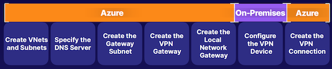

AZ104 Summary
1 Azure Administration
1 Understanding Azure Resource Manager
Exam Tips
- Resources are Azure - managed entities, like virtual machines, storage accounts, and virtual networks.
- Resources are contained in resource groups.
- Resource groups are contained in subscriptions.
- You can use REST API endpoints to manage Azure through Azure Resource Manager.
- Azure Resource Manager is a management service.
- Each resource has a resource provider.
Chatgpt Summary
-
Azure Resources: Resources are the smallest units in the Azure cloud, managed entities like virtual machines, storage accounts, and virtual networks that provide functionality for tasks such as compute, data storage, and networking.
-
Resource Groups: Logical containers for grouping resources in Azure based on factors like lifecycle, security, or environment (e.g., dev, test, production) to manage and organize resources efficiently.
-
Subscriptions: Boundaries for actual resources in Azure, grouping resource groups and associated resources, used as billing units to determine Azure Cloud costs based on accumulated costs within the subscription.
-
Azure Resource Manager: Top-level resource in Azure, an orchestration layer that allows management of Azure resources using tools like Azure portal, CLI, and PowerShell through REST API endpoints, interacting with resource providers for specific operations.
-
Identity and Access Management: Azure adopts an identity-centric security approach using Azure AD, a standalone identity and access management resource separate from subscriptions, where tenants (e.g., TenantA) with trust relationships manage resources securely across subscriptions.
Key Takeaways:
- Understanding Azure resources, resource groups, and subscriptions as essential components in managing Azure services and costs.
- Utilizing REST API endpoints to interact with Azure resources through Azure Resource Manager, the top-level management service in Azure.
- Identity and access management through Azure AD ensures secure resource management across subscriptions.
2 Using the Azure Portal and Cloud Shell
- The Azure portal is a graphical user interface accessed via a web browser to create and manage resources in Azure.
- It interacts with Azure Resource Manager and resource providers to manage Azure resources.
- Components of the Azure portal include the toolbar, search bar, Cloud Shell for programmatically managing resources, and user profile settings.
- Key features of the toolbar include creating resources, accessing dashboards, managing directories, notifications, and portal settings.
- The search bar allows searching for resources, services, and documentation related to specific terms.
- Cloud Shell allows using Azure CLI and Azure PowerShell to interact with Azure resources through a web-based cloud terminal.
- Demonstrated creating a virtual machine in the Azure portal and configuring Cloud Shell with advanced settings.
- Additional features in the Azure portal include managing appearance and startup views, support options, leaving feedback, and user profile settings.
- Use Azure portal for managing resources, performing management operations, and logging support tickets.
- Azure portal can also be used for managing billing and understanding costs in Azure.
3 Using Azure CLI and PowerShell
Here is a summary and list of exam points for the AZ-104 test based on the provided article:
- Azure CLI:
- Command-line utility for managing Azure resources.
- Contains various Azure CLI commands for managing services in Azure.
- Can be used in Cloud Shell or installed locally on machines.
- Requires authentication both in Cloud Shell and on local machines.
-
Bash-esque scripting allows for automation of tasks on Azure resources.
-
Azure PowerShell:
- Set of cmdlets within PowerShell for managing Azure resources.
- Can create and manage Azure resources without logging into the Azure portal.
-
Object-oriented nature allows for scripting, automation, and robust functionality.
-
Basic Operations:
- Creation of resource groups, virtual machines, and other Azure resources.
-
Interaction with Azure services through appropriate commands and cmdlets.
-
Demonstration:
- Logging into Azure portal using Azure Cloud Sandbox credentials.
- Setting up Cloud Shell instance by mapping it to a storage account file share.
-
Using Azure CLI and Azure PowerShell to create Azure resources and run commands/cmdlets.
-
Azure CLI Commands:
- Examples:
az group listto list resource groups. -
Provides information in JSON format about resources.
-
Azure PowerShell Cmdlets:
- Examples:
Get-AzResourceGroupto get information about resource groups. -
Object-oriented approach allows for saving objects to variables and accessing properties.
-
Creating a Virtual Machine with Azure CLI:
- Example:
az vm createcommand to create and configure a VM. -
Specifies resource group, location, name, image, admin username, and SSH keys.
-
Managing Cloud Shell:
- Using cmdlets like
Get-CloudDriveto get information about the mapped storage account. -
Scripting operations to manage resources efficiently.
-
Resource Management:
- Using cmdlets like
Get-AzResourceto view and manage Azure resources. -
Using piped cmdlets to format and display resource information.
-
Clean-up Script:
- Demonstrating a script to clean up resources using Azure CLI commands.
- Cautioning against running destructive scripts in production environments.
-
Key Takeaways:
- Understanding the use of Azure CLI and Azure PowerShell for managing Azure resources.
- Ability to install and use these tools locally or within the Azure portal's Cloud Shell.
- Leveraging scripting and automation for managing Azure resources efficiently.
- Being aware of the 20-minute timeout in Cloud Shell for interactive sessions.
4 Using ARM Templates
- ARM templates are JSON files used in Azure Resource Manager to provide Infrastructure as Code.
- They allow for codifying infrastructure, enabling repeatable deployments at various scopes like subscription or resource group.
- Parameters and variables are components used to pass information into the template, with parameters being dynamic and variables being hardcoded.
- The resources section defines the resources to deploy, including their properties that can be defined using parameters or variables.
- The outputs component returns information from the template execution, such as returning IP addresses.
- ARM templates enable quick deployment of modular environments in Azure and support nested templates for deploying resources efficiently.
- Demonstrations involve obtaining a template from a repository, deploying it in the Azure portal, configuring parameters, validating the deployment, and reviewing the created resources.
List of exam points from the article:
- Definition of ARM templates and their role in Infrastructure as Code.
- Explanation of parameters and variables in ARM templates.
- Importance of the resources section for defining resources to deploy.
- Use of the outputs component to return information from the template execution.
- Deployment process in Azure portal, including configuration and validation steps.
- Scope of ARM template deployment at various levels such as subscription or resource group.
- Ability to create repeatable and modular environments using ARM templates.
- Support for nested ARM templates for efficient deployment of resources.
2 Governance and Compliance
1 Managing Subscriptions
- Subscriptions in Azure are the billing unit for cloud costs generated by underlying resources.
- Resources in subscriptions include resource groups containing resources like virtual machines, storage accounts, and networks.
- Subscriptions provide a level for scoping governance, security, and deployments using ARM templates.
- Organizational subscriptions help in segmenting billing units and managing costs for different teams or workloads.
- Azure identities can be assigned roles like billing admin for managing subscriptions.
- Types of subscriptions include Azure Plan, Enterprise Agreement Support, Pay-As-You-Go, and free trial plans.
- Naming conventions for subscriptions can help in governance, compliance, and logical segmentation of resources.
- Subscriptions are associated with Azure AD tenants, enabling trust relationships and authentication processes.
- Subscriptions are used for aggregating cloud costs, scoping governance, security, authorization, and resource deployments in Azure.
List of exam key points for the AZ-104 test:
- Understanding the role of subscriptions as billing units in Azure for cloud costs.
- Knowledge of resources within subscriptions, including resource groups and associated resources.
- Importance of subscriptions for governance, security, and scoping deployments using ARM templates.
- Segmentation of organizational workloads and teams using subscriptions.
- Assignment of roles to Azure identities for managing subscriptions.
- Different types of Azure subscriptions such as Azure Plan, Enterprise Agreement Support, Pay-As-You-Go, and free trial plans.
- Use of naming conventions for subscriptions to aid in governance, compliance, and logical resource segmentation.
- Relationship between subscriptions and Azure AD tenants for authentication and authorization.
- Applications of subscriptions for managing cloud costs, governance, security, and resource deployments in Azure.
2 Using Management Groups
- Management Groups Overview:
- Management groups are logical containers used to manage subscriptions.
- They provide a hierarchy for organizing and managing subscriptions and resources.
-
Management groups have a parent-child relationship, allowing for organizational hierarchy in Azure environments.
-
Hierarchy and Scope:
- There is a parent-child relationship between management groups, with a root-level management group at the top.
- Management groups can support up to 6 levels of hierarchy.
-
Role-based access control (RBAC) roles and Azure Policies can be deployed at various scopes within management groups to enforce governance and compliance.
-
Azure Portal Demonstration:
- In the Azure portal, management groups are set up to create hierarchical structures for organizations.
- Management groups can be created, renamed, deleted, and have child objects added to them.
- RBAC roles can be assigned to management groups to control access and permissions.
-
Policies can be used at the management group level to enforce rules and standards across subscriptions and resources.
-
Root Management Group:
- The root management group is the top-level resource that cannot be moved or deleted.
- Access to the root management group requires Global Administrator access in Azure AD tenant.
- Elevating to User Access Administrator of the root management group may be necessary in certain situations, but should be revoked after the task is completed.
3 Understanding Azure Policy
- Azure Policies Overview:
- Azure Policies are similar to a set of rules that enforce compliance and enable auditing in Azure environments.
-
They help organizations implement enterprise-level governance and compliance in Azure.
-
Components of Azure Policy:
- Policy Definitions: Define specific rules or criteria for compliance, such as allowed locations or prohibited resources.
- Policy Assignments: Put policy definitions into action at a specific scope, like a management group or subscription.
-
Initiative Definitions: Collections of policies tailored to achieve a high-level goal, ensuring compliance through various policies.
-
Real-Life Use Case Example:
- For instance, requiring specific tags on resources to enforce compliance.
- Create a policy definition that checks for tags like "project: az104" on virtual machines and denies creation without them.
-
Assign this policy at the scope of a resource group to enforce compliance on resources deployed there.
-
Azure Policy Management in Azure Portal:
- Use the Azure Portal to author, review, and assign policy definitions.
- Assign policies at different scopes like subscriptions or resource groups.
-
Monitor compliance through the Compliance dashboard in Azure Policy.
-
Key Takeaways for Understanding Azure Policy:
- Azure Policy enforces compliance and governance in organizations' Azure environments.
- Components include policy definitions, policy assignments, and initiative definitions.
- Policies can audit compliance, deny non-compliant resource creation, or enforce specific standards across resources.
4 Tagging Resources
-
Tags in Azure: Tags in Azure are name-value pairs used for various purposes such as organizing resources, cost analysis, and resource management.
-
Tagging Conventions: Tags can be used to categorize resources based on departments, environments (e.g., production, dev, test), or geographical locations.
-
Tag Limits: Tags have limits where the name can be up to 512 characters and the value up to 256 characters, except for storage accounts where the name can only be 128 characters long. Resources can have up to 50 tags at a time.
-
Tag Assignment Hierarchy: Tags are not inherited from higher scopes like resource groups or subscriptions. Each resource must be tagged independently.
-
Azure Policies: Azure Policies can be used to enforce tagging inheritance within resource groups or subscriptions.
-
Resource Tagging Demonstration: The article provides a demonstration on how to assign tags to a resource group in the Azure portal and emphasizes that tags are not inherited by the resources within the group.
-
Automation with Tags: Automation scripts using PowerShell or Azure CLI can be used to apply tags at scale to multiple resources within a resource group or subscription.
-
Key Takeaways: Tags are flexible and versatile tools in Azure that can be used for resource management, cost analysis, and automation. Tags are not inherited by resources and must be applied individually.
5 Locking and Moving Resources
- Azure Locks:
- Feature to put a lock on a resource to override permissions for authorized users.
- Locks can be applied at different scopes - subscriptions, resource groups, or individual resources.
- Types of locks include ReadOnly lock (allows read but blocks delete/write operations) and CannotDelete lock (allows read and specific write operations but blocks delete).
-
Locks are inherited from the parent scope to child scopes and resources.
-
Moving Resources in Azure:
- Moving resources involves transferring resources between resource groups or subscriptions.
- Cross-subscription resource movement requires specific role assignments and permissions.
- Moving resources is considered a write operation.
-
Locks on resources can affect the ability to move resources - ReadOnly locks can restrict movement.
-
Demonstration and Practical Application:
- Demonstrated adding and testing locks on Azure resources (e.g., adding a Delete lock).
- Showed how locks restrict certain operations (e.g., delete, update) on resources.
- Moving resources within Azure involves selecting resources and choosing the destination (resource group, subscription, region).
-
Some resource types may not support moving operations, requiring careful planning.
-
Key Takeaways:
- Understand different types of resource locks (e.g., ReadOnly, CannotDelete) and their effects on operations.
- Resource locks can be inherited and impact the movement of resources.
- Considerations for moving resources include permissions, supported operations, and planning for resource movement.
6 Managing Azure Costs
- Pricing Calculator： Estimate workload costs for prospective workloads
- TCO Calculator： Compare costs to determine cost savings between on-premises and TCO cloud solutions
-
Cost Management： Analyze costs, apply filtering, and create budgets
-
Understanding Azure Costs:
- Azure costs are impacted by various components such as subscription types, resource types, usage meters, resource usage, location, etc.
-
Azure costs are different from traditional on-premise costs as Azure handles the underlying infrastructure, and users only pay for the resources they use.
-
Cost Best Practices:
- Select appropriate resources for the use case to avoid wasting money.
- Understand resource needs and choose the right sizing for resources.
- Deallocate resources when not needed to save costs.
- Utilize cloud capabilities like scalability and elasticity to match resource usage with demand.
-
Plan costs in advance before purchasing Azure services.
-
Cost Management Tools:
- Microsoft Cost Management: Allows for cost analysis and budget creation to monitor Azure spending.
- Pricing Calculator: Estimates workload costs by defining workload details before provisioning resources.
-
Total Cost of Ownership (TCO) Calculator: Compares on-premise workload costs with Azure costs to determine potential savings by migrating to Azure.
-
Key Takeaways:
- Understanding cost best practices is crucial for optimizing Azure spending.
- Tools like the Pricing Calculator and TCO Calculator help in estimating and comparing costs for workloads in Azure.
- Microsoft Cost Management tool provides insights into Azure spending and enables budget creation.
7 Building a Cloud Governance Strategy
- Defining Governance and Planning a Cloud Strategy:
- Establishing rules, policies, and compliance standards for the organization.
- Defining governance needs, policies, and standards based on organizational requirements.
-
Planning tools and services for implementing governance in Azure environments.
-
Governance Services in Azure:
- Management groups and subscriptions for organizational hierarchy and structure.
- Azure RBAC role assignments for managing identities at varying scopes.
- Azure Policies for enforcing standards and compliance initiatives.
-
Resource locks and tagging for resource management and organization.
-
Key Takeaways:
- Management groups and subscriptions help create hierarchical structures.
- Azure Policies enforce compliance standards like tagging naming conventions.
- Role assignments and resource locks ensure proper access control and operations.
- Azure Blueprints (optional) offer advanced features for packaging organizational structures and policies.
3 AZ Identity
1 Conceptualizing Azure Active Directory
Identity and Access Management (IAM)
Global cloud-based identity service for Azure that provides an identity repository.
Create Identity Resources
Create users and groups.
Manage Identity Security
Enable MFA, control resource access, and provide policy-based controls
- Identity and Access Management Basics:
- Understanding the shift towards identity-centric security in cloud environments.
-
Importance of authentication for accessing resources.
-
Azure Active Directory (AD):
- Azure AD is the identity and access management solution for the cloud.
- Provides cloud-based identities for accessing resources.
-
Users authenticate against identities to perform specific actions.
-
Azure AD Tenant Architecture:
- Azure AD is a global service with instances scoped to specific geographies.
- Tenants exist for different organizations alongside each other.
-
Default domain naming convention and custom domain registration.
-
Azure AD Features:
- Security functionalities like multi-factor authentication, Conditional Access policies, and privileged identity management.
- Collaborative features such as B2B collaboration and Azure AD B2C.
-
Monitoring features including audit logging and identity protection.
-
Identity Integration:
- Integration of Azure AD with on-premises solutions like Active Directory Domain Services using Azure AD Connect.
-
Single sign-on capability for synced users from on-premises environments.
-
Comparing Active Directory with Azure AD:
- Active Directory features organizational units, group policy objects, Kerberos, LDAP, and NTLM for authentication.
-
Azure AD features administrative units, SAML, WS-Federation, OAuth for authentication, and is a flat directory structure.
-
Key Takeaways:
- Azure AD is the global identity and access management solution for managing cloud-based identities.
- Trust relationships with subscriptions provide identities access to resources.
- Azure AD offers security functionalities like multi-factor authentication, role assignments, and Conditional Access policies.
2 Managing Tenants
- Azure Active Directory is a global service that spans the Azure cloud.
- Create instance of that service known as a tenant inside of geographical regions like the United States.
- Tenant of Azure Active Directory will be running on servers allocated for Azure Active Directory global service inside of that geographical region.
-
Identity objects, like users and groups, devices, and applications are all going to exist.
-
Planning for Azure Organization:
- Importance of planning the organization structure for Azure adoption.
- Understanding the setup of the first Azure Active Directory (AD) tenant.
- Security considerations when setting up the tenant, including best practices like self-service password reset and multi-factor authentication.
-
Creating and Managing Azure AD Tenant:
- Process of creating an Azure AD tenant, including selecting the tenant type, configuring settings, and region selection.
- Populating the tenant with identity resources like users, groups, and devices.
- Managing applications, including using existing app gallery apps and registering custom applications.
- Implementing hybrid identity solutions to sync on-premises identities with Azure AD.
-
Tenant Management and Monitoring:
- Managing tenant security settings such as multi-factor authentication and conditional access policies.
- Configuring password reset options and mobile device management (MDM).
- Customizing domain names and using Azure AD Connect for identity synchronization.
- Licensing management, application registration, device management, user and group creation, and external collaboration.
- Assigning roles to users for specific administrative tasks, such as billing administrator roles.
-
Key Takeaways:
- Understanding Azure Active Directory as a global service within Azure cloud.
- Creation of an Azure AD tenant within specific geographical regions.
- Tenant hosting on Azure AD global service servers in the chosen region.
- Identity resources (users, groups, devices, applications) reside within the tenant for access to Azure resources.
3 Creating and Managing Users
Type Of User
Administrator, member, and guest accounts
Role Assignment
Determines permissions and access
Obiect Ownership
Apps, devices, groups, and resources that are owned
Here is a summary of key points for the AZ-104 exam regarding "Creating and Managing Users":
- Users in Azure Active Directory (AD):
- Users are identity objects in Azure AD with a set of permissions.
- Users can originate from within the Azure AD tenant or externally.
-
Types of users include administrators (global admins, billing admins, user admins), regular members (native to the organization), and guest members (external users invited for collaboration).
-
Managing Users:
- Properties of users can be modified, such as job title, display name, and usage location.
- Users can be assigned role assignments for specific operations in Azure environments.
-
Users can have object ownership, for example, managing permissions of a group of users.
-
Creating Users:
- Users can be created using various methods like Azure portal, Azure CLI, and Azure PowerShell.
- When creating a user, properties like username, domain, password, and other details are set.
-
User properties can be updated post-creation, such as assigning them to a specific department.
-
Bulk Operations:
- Bulk operations like Bulk Create, Invite, and Bulk Delete can be performed using CSV files.
- CSV files must contain required components like username, password, and other necessary details.
-
Bulk operations can help efficiently manage multiple users at once.
-
Inviting Guest Accounts:
- Guest accounts are external users invited for collaboration.
- Inviting a guest account is similar to creating a user, requiring only an email address.
-
Guest users have limited permissions within the Azure environment.
-
Role Assignments:
- Role assignments provide users with authorizations to perform specific actions in Azure environments.
- Understanding role assignments is essential for managing user access and permissions effectively.
4 Creating and Managing Groups
- Users in Azure Active Directory (AD):
- Users are identity objects in Azure AD with a set of permissions.
- Users can originate from within the Azure AD tenant or externally.
-
Types of users include administrators (global admins, billing admins, user admins), regular members (native to the organization), and guest members (external users invited for collaboration).
-
Managing Users:
- Properties of users can be modified, such as job title, display name, and usage location.
- Users can be assigned role assignments for specific operations in Azure environments.
-
Users can have object ownership, for example, managing permissions of a group of users.
-
Creating Users:
- Users can be created using various methods like Azure portal, Azure CLI, and Azure PowerShell.
- When creating a user, properties like username, domain, password, and other details are set.
-
User properties can be updated post-creation, such as assigning them to a specific department.
-
Bulk Operations:
- Bulk operations like Bulk Create, Invite, and Bulk Delete can be performed using CSV files.
- CSV files must contain required components like username, password, and other necessary details.
-
Bulk operations can help efficiently manage multiple users at once.
-
Inviting Guest Accounts:
- Guest accounts are external users invited for collaboration.
- Inviting a guest account is similar to creating a user, requiring only an email address.
-
Guest users have limited permissions within the Azure environment.
-
Role Assignments:
- Role assignments provide users with authorizations to perform specific actions in Azure environments.
- Understanding role assignments is essential for managing user access and permissions effectively.
5 Creating Administrative Units
- Administrative units act as a logical container within a flat data structure of Azure Active Directory, allowing for organization and scoping of Azure AD identity objects.
- They enable control of the scope of administrative users, preventing them from having default tenant-level access and allowing for specific scoping to manage specific identity objects.
- Common use-case examples include geographical locations, business departments, and subsidiary organizations of a parent organization using the same Azure Active Directory to manage all entities.
- Administrative units can be used to manage users, groups, and devices, and can be assigned specific administrative roles tailored to the needs of the organization.
- Azure AD P1 and P2 licensing allows for the management of membership types to administrative units, including Assigned, Dynamic User, and Dynamic Device, which can be used to manage identity objects within the administrative units.
6 Configuring SSPR
- Traditional password reset method required users to request help desk admin to reset their passwords, leading to decrease in productivity.
- Self-service password reset(SSPR) enables users to reset their passwords without help desk admin, increasing productivity and decreasing admin overhead.
- SSPR process involves localization, verification, authentication, and setting options for notifications.
- Authentication methods include mobile app, mobile app code, email, mobile phone, office phone, and security questions.
- SSPR considerations include enabling and managing via Azure AD Group, different authentication methods for regular users and administrators, and required licensing for SSPR.
- The key takeaway is that SSPR provides a secure and productive way of resetting passwords for users and administrators.
7 Azure AD Device Management
Device Identity + Conditional Access
- Simplified procedure for adding and managing devices
- Improved user experience on devices
- Support for Microsoft Intune
-
Single Sign-On (SSO) for any registered or joined devices
-
Azure Active Directory is the identity solution inside of the Azure Cloud.
- Identity objects are used to authenticate into Azure environments.
- Devices need to be managed and registered in Azure Active Directory to control access to resources, assets, and data.
- Three registration options for devices in Azure Active Directory: Azure AD Registered, Azure AD Joined, and Hybrid Azure AD Joined.
- Azure AD Registered is for devices owned by employees, while Azure AD Joined is for organization-owned devices.
- Device settings in Azure AD can be managed at the tenant level to control device join and registration.
- Hybrid Azure AD Joined is a device that exists both on-premises and in the cloud.
- Registering and joining devices in Azure Active Directory provides improved user experience with features like single sign-on.
8 Configuring Azure AD Join
- Azure AD tenants are the instance of the Azure AD service.
- Azure AD architecture was discussed to understand its structure.
- Comparison between Azure Active Directory and Active Directory was made to highlight the differences.
- The creation and management of user accounts were demonstrated, including member, administrative, and guest users.
- Use of groups to manage users and administrative units to limit administrative control was discussed.
- Self-service password reset (SSPR) was highlighted as a feature to reduce password reset workload for administrators.
- Device settings and management in Azure AD, including joining devices to the network using Azure AD join, were covered.
- The importance of Azure AD in identity and access management, including user roles, permissions, groups, and device identities, in the Azure cloud.
4 Role-Based Access Control
1 Understanding Roles in Azure
Azure Roles
- Controls access to Azure resources
- Referred to as Azure RBAC
- Built-in roles
- Custom roles
- Scope at management groups, subscriptions, resource groups, and resources
Azure AD Roles
- Controls access to Azure AD resources
- Built-in roles
- Custom roles
-
Scope at Azure AD tenant
-
Role-Based Access Control (RBAC) is based on the equation of who, what, and where.
- RBAC involves defining security principles (who), role assignments (what), and the scope at which the roles can be utilized (where).
- In Azure, there are two types of roles: Azure roles and Azure AD roles.
- Azure roles manage access to resources within Azure subscriptions, while Azure AD roles manage access to Azure AD resources within the Azure AD tenant.
- Built-in roles for Azure roles include Owner, Contributor, Reader, and User Access Administrator.
- Built-in roles for Azure AD roles include Global Admin, User Administrator, Billing Administrator, and Helpdesk Administrator.
- Both Azure roles and Azure AD roles support custom roles for more specific access control.
- Azure roles can be assigned at various scopes such as management groups, subscriptions, resource groups, and individual resources.
- Azure AD roles have a scope set at the Azure AD tenant level, but can use administrative units as a logical container for scoping.
- It's important to understand the differences between Azure roles and Azure AD roles and how they impact access control within the Azure environment.
2 Assigning Access to Resources
- Provide identities with access to Azure resources
- Roles are a collection of permissions
-
- Scoping hierarchy for role assignments
Implicit Deny -> Explicit Allow -> Explicit Deny
- The article discusses the components of an authorization system for Azure RBAC, including defining the "who" to authorize (security principal), defining the actions to authorize, and setting the scope of authorization.
- It explains that Azure AD tenants have an implicit deny by default, meaning that they cannot perform any actions unless access is explicitly provided via role assignments.
- Role definitions in Azure RBAC consist of actions, not actions, data actions, not data actions, and assignable scope.
- The article highlights the additive properties of role assignments, where multiple roles assigned to a user are added together to determine the effective permissions.
- The demonstration in the article shows how to assign access to resources in the Azure portal, including selecting a user, determining the role and scope of the assignment, and making the role assignment.
- The key takeaways for the exam include understanding
- the collective permissions of role assignments,
- the scoping hierarchy for role assignments,
- the implicit deny by default for Azure AD tenants,
- the concept of explicit allow and deny assignments.
Key Exam Points:
- Understand the components of an authorization system for Azure RBAC, including defining the "who" to authorize, defining the actions, and setting the scope of authorization.
- Understand the default implicit deny for Azure AD tenants and the need for explicit role assignments to provide access.
- Know the components of role definitions in Azure RBAC, including actions, not actions, data actions, not data actions, and assignable scope.
- Understand the additive properties of role assignments and how multiple roles are added together to determine effective permissions.
- Be able to demonstrate the process of assigning access to resources in the Azure portal, including selecting a user, determining the role and scope, and making the role assignment.
3 Creating Custom Roles
- Custom roles are not much different than built-in roles, but they are created by making a custom role definition
- It's important to have User Access Administrator or Owner role to create custom roles
- Custom roles can be created for both Azure AD and Azure RBAC roles
- Role definitions include Actions, NotActions, DataActions, NotDataActions, and AssignableScope
- A demonstration is given on how to create and assign a custom role using JSON in the Azure portal
- Custom roles are used when built-in roles do not meet the specific requirements
- JSON is used to define the custom role in the Azure portal
- Access can be checked for the assigned user to ensure the custom role has been successfully assigned
- Custom roles are created when no built-in roles meet the requirements and User Access Administrator or Owner role is required to create them. Custom roles are used to provide access to Azure resources for identities.
Exam points:
- Understanding custom roles in Azure and their similarity to built-in roles
- Knowledge of the components that go into creating a custom role definition
- Ability to create a custom role using JSON in the Azure portal
- Understanding the scoping hierarchy for role assignment and how it determines the assignable scope for roles
- Knowing the permissions and actions allowed in custom roles
- Awareness of the roles required to create custom roles in Azure (User Access Administrator or Owner role).
5 Azure Storage
1 Understanding Storage Accounts
Account Type
- General Purpose v1
- Legacy for blobs, files, queues, and tables
- General Purpose v2
- Recommended for blobs, files, queues, and tables
Performance Tier
- Blob Storage
- Legacy blob-specific accounts
- Standard
- Default storage performance tier
- Premium
- High-performance storage tier
Replication
- Locally Redundant Storage (LRS)
- 3 copies in a physical location within a region
- Zone-Redundant Storage (ZRS)
- 3 copies across zones within a region
- Geo-Redundant Storage (GRS)
- LRS in a primary and secondary region
- Geo-Zone Redundant Storage (GZRS)
- ZRS in a primary region and LRS in a secondary region
Access Tier
- Hot
- Frequently accessed data
- Cold
- Infrequently accessed data
-
Archive
- Backup data rarely accessed
-
Storage accounts in Azure are top-level resources for storage purposes.
- Each storage account can have multiple subservices with their own storage purposes, such as Azure Queue, Azure Tables, Azure Files, and Azure Blob.
- Components of a storage account include account type, performance tier, replication, and access tier.
- Account type determines the features and costs available for the storage account.
- Performance tier determines the performance level of the storage account.
- Replication determines the infrastructure redundancy and data redundancy options.
- Access tier determines the access levels and costs for retrieving stored data.
- Azure storage redundancy involves storing multiple copies of data.
- Redundancy options include locally-redundant storage, zone-redundant storage, geo-redundant storage, geo-zonal redundant storage, and read-access geo-zonal redundant storage.
- Creating a storage account involves configuring its details, such as account name, region, performance tier, replication, and access tier, through the Azure portal.
- Storage accounts have different sub-services accessible through their endpoints, each with its own resource ID and public endpoint.
Exam Points:
- Storage accounts are top-level resources for storage purposes in Azure.
- Subservices within a storage account have their own storage purpose.
- Subservices include Azure Queue, Azure Tables, Azure Files, and Azure Blob.
- Components of a storage account include account type, performance tier, replication, and access tier.
- Azure storage redundancy involves storing multiple copies of data.
- Redundancy options include locally-redundant storage, zone-redundant storage, geo-redundant storage, geo-zonal redundant storage, and read-access geo-zonal redundant storage.
- A demonstration of creating a storage account is provided.
2 Conceptualizing Azure Blob Storage
- Azure Blob Storage is a sub-service of a storage account in Azure.
- Blob Storage is an object-based storage service that stores items such as image and video files, text files, log files, and VHD files.
- Blobs are stored inside containers, which act as logical containers for blobs.
- Blobs can be of different types, including block blobs, append blobs, and page blobs.
- Access to blobs is controlled through container access levels, which can be private, blob-level, or container-level.
- Public access to blobs is granted at the storage account level by default.
- Blob containers have URLs that can be used to access them and the blobs they contain.
- Access levels can be modified after the containers and blobs are created.
- Azure portal can be used to create and configure blob containers and upload blobs.
Exam Point
- Azure Blob Storage is a sub-service of a storage account in Azure.
- Blob Storage is an object-based storage service for storing files such as images, videos, text files, log files, and VHD files.
- Blobs are stored inside containers, which act as logical containers for blobs.
- Blobs can be of different types, including block blobs, append blobs, and page blobs.
- Access to blobs is controlled through container access levels, which can be private, blob-level, or container-level.
- Public access to blobs is granted at the storage account level by default.
- Blob containers have URLs that can be used to access them and the blobs they contain.
- PAccess levels can be modified after the containers and blobs are created.
- Azure portal can be used to create and configure blob containers and upload blobs.
- Blob containers can have different access levels, including private, blob-level, and container-level access.
- Blobs can be accessed using their container's URL.
- Access levels can be modified after the creation of the blobs and containers.
- Azure Blob service provides different types of blobs, including block blobs, append blobs, and page blobs.
- Block blobs are suitable for streaming services, such as video streaming platforms.
- Append blobs are used for logging operations and offloading logs from virtual machines.
- Page blobs are used for creating golden images for virtual machines.
- Blob access can be controlled through container access levels, which can be private, blob-level, or container-level access.
- Public access to blobs is granted at the storage account level by default.
3 Configuring Blob Object Replication
- Versioning
Versioning must be enabled on both the source and destination accounts to perform replication.
- Change Feed
Change feed must be enabled on the source account. Azure storage monitors the $blobchangefeed to advise
replication
- Cross Subscription & Azure AD
Object replication is supported across subscriptions and Azure AD tenants
- Replication Policy
A storage account can be a source for up to two destination accounts. Each policy supports only a single pairing using a Policy
- Account Kind, Access Tier, & Blob Types
Only GPv2 standard supports object replication of block blobs and their versions, regardless of default access tiering, on source and destination accounts.
Summary and Exam Points:
- Object replication is a feature of Azure storage accounts that allows for asynchronous copying of block blobs between storage accounts.
- Both the source and destination storage accounts must have versioning enabled.
- The source storage account must have the blob change feed enabled to inform the asynchronous copy operations.
- Object replication can be done between storage accounts in the same region, across regions, across subscriptions, and across different Azure AD tenants.
- Object replication minimizes latency by replicating blobs to a storage account closer to the consumers.
- It increases processing efficiency by replicating blobs to storage accounts where they are needed.
- It allows for data distribution and analysis in one location and replication to other storage accounts.
- Object replication can optimize storage costs by moving replicated data to the archived tier for reduced costs.
- Replication can be configured through the Azure portal by setting up replication policies and rules.
- Both the source and destination storage accounts must be created with the necessary configurations for versioning and change feed.
- Replication status can be monitored and managed through the Azure portal.
- Important concepts:
- Versioning and change feed
- Replication policies and rules
- Replication between different regions, subscriptions, and Azure AD tenants
- Object replication can act as a source for up to two destination storage accounts.
Exam points:
- Understand the concept of object replication for Azure storage accounts.
- Know how to enable versioning and change feed on storage accounts.
- Understand the benefits of object replication, such as minimizing latency, increasing processing efficiency, and optimizing storage costs.
- Understand how to configure object replication through replication policies and rules.
- Understand how object replication can be done between storage accounts in different regions, subscriptions, and Azure AD tenants.
- Understand how to monitor and manage replication status.
4 Configuring Blob Lifecycle Management
- Storage Accounts
Supports GPv2 storage accounts, Blob storage accounts, and BlockBlob storage accounts.
- Scoping
Scoping at the storage accoun level or limit blobs with filters.
- Types & Subtypes
Supports block and append blobs, and supports subtypes such as base blobs, snapshots, and versions.
- If/Then Logic
Uses logic in lifecycle rules to move blobs through access tiers based on modification and access times
- Filtering
Filtering blobs in the rule using prefix or blob index matches. (Blob index feature in public-preview)
Summary and Exam Points:
- Lifecycle Management is a feature of Azure Blob Storage that allows for automated movement of blobs between different access tiers as they age.
- By moving blobs to different tiers, organizations can optimize storage costs and ensure accessibility based on their evolving needs.
- Lifecycle Management can be configured for blob containers in a storage account.
- Blobs can be moved from a hot tier to a cool tier, then to archive, and eventually deleted.
- Automation of lifecycle management reduces administrative overhead and ensures cost optimization.
- To configure Lifecycle Management, a storage account must be created with the appropriate settings.
- Lifecycle Management rules can be created to specify the conditions under which blobs should be moved.
- Rules can be applied to all blobs or limited to specific filters such as blob type or prefix.
- Filters can be based on properties like last modified or creation date.
- Actions such as moving blobs to a different tier or deleting them can be performed based on the defined rules.
- Blob Index Match, a key-value tagging system, can be used for additional filtering and organization of blobs.
- Lifecycle Management provides scoping options to limit the application of rules to specific storage accounts or blob containers.
- Important concepts:
- Blob access tiers (hot, cool, archive)
- Automation of blob movement
- Configuring Lifecycle Management rules and filters
- Blob Index Match for tagging and filtering
- Scoping options for Lifecycle Management policies
- Lifecycle Management can help optimize storage costs and ensure accessibility of blobs based on evolving needs.
Exam points:
- Understand the concept and benefits of Lifecycle Management for Azure Blob Storage.
- Know how to create a storage account with the necessary settings for Lifecycle Management.
- Understand the different access tiers (hot, cool, archive) and when to use each one.
- Understand how to configure Lifecycle Management rules and filters.
- Understand how to use Blob Index Match for additional filtering and organization.
- Understand how to apply scoping options to Policies for specific storage accounts or blob containers.
5 Configuring Azure Files
- Managed File Share
Utilizes storage account redundancy and security
- Operating Systems
Windows, Linux, and macOS support
- File Share Quota
5TB default size
Chatgpt Summary:
- Azure Files is a managed file share service within an Azure Storage account.
- It provides SMB or NFS connectivity for traditional file sharing services.
- It supports Windows, Linux, and macOS clients.
- Azure File Sync can extend Azure Files into on-premise environments.
- Azure Files has a traditional file structure with folders and files.
- Connectivity options include insecure (REST, SMB 2.1, SMB 3.0) and secure (REST, SMB 3.0) protocols.
- Secure connectivity requires secure transfer to be enabled on the storage account.
- The tiers for file shares are Transaction Optimized, Hot, and Cool.
- File shares can have quotas, with the default size being 5 TB.
Exam points:
- Understand Azure Files as a managed file share service within Azure Storage accounts.
- Learn the connectivity options for Azure File shares and when to use secure transfer.
- Understand the supported client platforms for Azure Files.
- Know the different tiers available for Azure File shares and their use cases.
- Understand how to create and configure file shares, including quotas and resizing.
6 Configuring Azure File Sync
for synchronization. The key components of Azure File Sync are the Storage Sync Service, cloud endpoint, registered server, server endpoint, and sync group.
We can prepare a virtual machine by configuring IE security and creating a new volume, then install and register the Azure File Sync agent and create a sync group.
Cloud tiering allows on-premise file shares to locally cache frequently accessed files and maintain mappings to less frequently accessed files on the Azure file share.
- Azure File Sync is a service that extends the capabilities of Azure Files into on-premise file servers.
- It allows for increased storage capacity by locally caching frequently accessed files on-prem and mapping less frequently accessed files to the Azure file share.
- It is only supported with Windows 2012 R2 or later and supports SMB, NFS, and FTPS protocols.
- The key components of Azure File Sync are the Storage Sync Service, cloud endpoint, registered server, server endpoint, and sync group.
- Cloud tiering enables on-prem file shares to locally cache frequently accessed files and maintain mappings for less frequently accessed files on the Azure file share.
- To set up Azure File Sync, a file sync agent must be installed on the Windows machine and registered with the Storage Sync Service.
- To prepare a virtual machine for Azure File Sync, configure IE security and create a new volume
- Install and register the Azure File Sync agent on the virtual machine.
- The process includes creating a virtual machine, creating a Storage Sync Service, preparing the virtual machine by configuring IE security and creating a new volume, installing the Azure file sync agent, and registering the server with the Storage Sync Service.
- Finally, a sync group is created to allow for syncing between the cloud endpoint and server endpoint.
7 Storage Network Access
- Storage access options for services and resources inside storage accounts in Azure include public endpoints, restricted access, and access through specific virtual networks.
- Public endpoints are accessible by default and can be used to access services and resources using the service's public endpoint URL.
- Access to services and resources can be restricted by creating a firewall and specifying allowed IP address ranges or virtual networks.
- Private endpoints allow for private IP access to resources in an associated virtual network.
- Each service in a storage account has its own specific public endpoint URL.
- Storage account firewall settings can be modified to restrict access to selected networks and specify allowed IP address ranges.
- Private endpoint connections allow for private connectivity to storage accounts.
- Custom domains can be used to provide custom domain names for public endpoints.
- Storage account firewall settings can be configured in the Azure portal.
- The key takeaways are that public endpoints are accessible by default, access can be restricted through the storage account firewall, and private endpoints can provide private connectivity within a virtual network.
- Private endpoints provide private connectivity to services within virtual networks.
8 Securing Storage Accounts
- Access Keys
- Azure AD Authentication
- Shared Access Signature (SAS)
Chatgpt summary
- Storage Service Encryption is used to protect data at rest in Azure storage accounts.
- Secure transfer should be enabled to ensure that data in transit is protected over HTTPS connections.
- Infrastructure encryption provides an additional layer of encryption for the underlying infrastructure in Azure data centers.
- Access to storage account services and data can be managed using access keys, which provide unlimited access to both the management and data layers.
- Shared Access Signature tokens can be generated from access keys to provide limited and restricted access to storage account services and data.
- Azure AD Authentication allows for authentication using Azure RBAC roles and Azure AD identities, providing a more secure alternative to access keys.
- Role-based access control (RBAC) roles can be assigned to grant specific permissions at the container or blob level.
- Access policies can be used to define permissions and expiration dates for shared access signatures.
- Azure Defender for Storage can be enabled to continuously monitor storage account configurations and detect potential security vulnerabilities.
- The activity log can be used to audit operations and activities within a storage account.
- Encryption, access control, and monitoring are key security features for protecting storage accounts.
9 Using Azure Jobs
Import Jobs： Send large amounts of data to the Azure cloud when network bandwidth won’t support data migration.
Export Jobs： Receive large amounts of data on-premises from the Azure cloud when network bandwidth won’t support data migration.
- WAImportExport CLI Tool
Use to prepare disks for data and to estimate number of disks needed.
-
Windows Support Only
-
Azure Blob and Files
-
Azure jobs are used to move large amounts of data between on-premises environments and Azure storage accounts.
- The import job is used to move data from on-premises to Azure, supporting both blobs and files.
- The export job is used to move data from Azure to on-premises, supporting only blobs.
- Supported drive types for Azure jobs include SATA, HDD, and SSD drives.
- The WAImportExport tool is used to prepare the drives for import or export jobs and is only supported on Windows devices.
- The WAImportExport tool also estimates the number of disks needed for the data being moved.
- Import jobs require preparing the disks,
- putting the data on the disks
- creating the job,
- providing carrier and journal file information.
- Export jobs require creating the job, providing carrier information, preparing the disks, and checking the job status for downloading the data.
- Import jobs move data to the Azure cloud, while export jobs receive data from the Azure cloud.
- Azure jobs use physical ground shipping methods to transfer data when the network bandwidth is insufficient.
- Azure jobs are a solution for moving large amounts of data when network limitations exist.
10 Storage Utilities
Storage Explorer
- Manage storage accounts
- Use Azure Active Directory (AD) or Shared Access Signature (SAS)
- GUI-provided
- Uses AzCopy under the hood
AzCopy
- Manage storage accounts
- Use Azure Active Directory (AD) or Shared Access Signature (SAS)
- Scripting capabilities
Summary from Chatgpt
- Storage Explorer is a graphical user interface tool for working with Azure storage accounts.
- Storage Explorer can be used within the Azure portal or downloaded as a client for Windows, Linux, and macOS.
- Azure Storage Explorer can be authenticated using Azure account credentials, connection strings, or shared access signatures.
- It provides capabilities to upload/download files, generate SAS tokens, create snapshots, and manage access policies.
- AzCopy is a command-line utility for working with Azure storage accounts.
- AzCopy supports Windows, Linux, and macOS.
- AzCopy can be authenticated using Azure AD credentials or shared access tokens.
- It allows users to create containers, copy files to/from storage accounts, and perform various storage account operations.
- AzCopy offers scripting capabilities for automation and building complex scripts.
- The key takeaways are the differences between Storage Explorer and AzCopy, their authentication methods, and their capabilities for managing Azure storage accounts.
6 Virtual Networking
1 Conceptualizing Virtual Networks
- The purpose of a network in Azure is to provide an isolated space for communication between resources.
- Networks can provide private connectivity between resources within the network, as well as public connectivity to the internet or outside networks.
- Azure virtual networks are similar to traditional on-premises networks and provide the same capabilities but in the Azure cloud.
- Virtual networks in Azure allow for subnetting, traffic control with network security groups, and the provision of public IP addresses.
- Virtual networks are isolated from other users and utilize the Microsoft backbone infrastructure.
- They enable private networking between resources and can integrate with on-premises networks and remote user devices through VPN gateways and peerings.
- The components of a virtual network include an address space, the virtual network itself, and subnets for isolating resources.
- With virtual networks, resources can communicate privately within the network and with other Azure services.
2 Creating Virtual Networks
Default Connectivity
By default, intra-network traffic and outbound internet traffic is allowed.
Address Restrictions
Use of private addresses using RFC 1918 provide best results. The smallest VNet/subnet size allowed is /29 and the largest is /8.
Reserved IPs
Azure reserved IPs are X.X.X.0-3 and X.X.X.255
Have some reserved IPS for virtual networks which are 5 in total, the first 4 and the last
- DNS and DHCP
Azure-provided DNS or custom DNS. For VNets, DHCP is built-in.
- Network Integration
VNets are built for integration with one another, hybrid connectivity using VPNs, and ExpressRoute.
Supported Protocols
VNets support TCP, UDP, and ICMP protocols.
-
Determining IP address space: When designing a network, the first step is to determine the IP address space (IP CIDR) needed based on the number of available IP addresses required for the network.
-
Segmenting IP address space: After determining the IP CIDR, the next step is to decide how to segment the IP address space. This can involve separating different tiers of applications or creating subnets for different purposes.
-
Connectivity needs: It is important to determine the connectivity needs of the virtual network, such as allowing specific traffic over public IP addresses or controlling private IP addressing between front-end and back-end applications.
-
Virtual network features: Azure virtual networks offer features such as subnetting, private networking through private IP assignment, public networking through separate public IP resources, network integration with peers and VPN gateway, and monitoring capabilities.
-
Creating a virtual network: The article provides a demonstration of creating a virtual network with a specific IP address space and subnet, and then provisioning a virtual machine within the network.
-
Default connectivity and address restrictions: Virtual networks have default connectivity for intra-network and outbound internet traffic. There are address restrictions, including reserved IP addresses for Microsoft's functionality and restrictions on subnet sizes.
-
DNS and DHCP: Azure provides DNS and DHCP services for virtual networks. Custom DNS servers can be used, and the assignment of private IP addresses can be changed from dynamic to static.
-
Network integration features: Virtual networks can be integrated with other virtual networks, on-prem networks, and remote user devices through features like network peering and Azure VPN gateway.
-
Monitoring features: Virtual networks provide monitoring capabilities, such as viewing logs, monitoring connectivity between resources, and visualizing the network topology.
3 Deploying Network Resources
Private IPs
Statically or dynamically assigned addresses that allow private connectivity between resources
Public IPs
Statically or dynamically assigned addresses that allow public connectivity from the internet to a resource.
Two types of public IP SKUs:
- Basic
-
Standard
-
Private IP addresses are used for internal communication within a virtual network.
- Public IP addresses provide connectivity from the internet to resources in the virtual network.
- IP CIDR planning is important to ensure that IP address spaces do not overlap in peer networks.
- Private IP addresses can be statically or dynamically assigned to resources.
- Public IP addresses have different SKUs, including Basic and Standard.
- Basic SKUs are accessible by default and require manual security configuration.
- Standard SKUs are not publicly accessible by default and support availability zone deployments.
- Network interfaces and public IP addresses can be created in Azure to configure network resources.
- Network interface configurations include private and public IP addresses.
- Public IP addresses can be associated with network interfaces.
- Network resources need to be properly planned and configured to ensure secure and efficient network communication.
4 Routing Virtual Networks
System Routes
Default routes built-in to virtual networks that cannot be modified.
Custom Routes
User-defined routes or BGP routes that override system routes
Custom > BGP> System
- Our system routes are going to exist by default,
- we can override those with our custom routes
-
BGP routes will obviously override our system routes, but user-defined routes that we create are going to overriding those BGP routes
-
Routes are used for connectivity between resources within a network and outbound to other networks and the internet.
- There are different routing types in Azure, including system routes and custom routes.
- System routes are default routes built into virtual networks and cannot be modified.
- Custom routes can be created to override system routes and can be user-defined or propagated from integrated network scenarios.
- User-defined routes can block specific traffic or route traffic through network virtual appliances like Azure Firewall.
- BGP routes are exchanged between integrated networks and can also override system routes.
- Effective routes can be viewed on network interfaces to see the active routes in place.
- Route tables can be created and associated with subnets to manage custom routes.
- Custom routes take precedence over system routes, and user-defined routes take precedence over BGP routes.
5 Network Security Groups(NSGs)
- Network security groups (NSGs) are used to control inbound and outbound traffic flow in Azure.
- NSGs can be implemented at the subnet or network interface card (NIC) level.
- Security rules inside NSGs can be prioritized, with lower numbers indicating higher priority.
- Rules in NSGs are used to filter and allow or deny traffic.
- NSGs have both default rules and user-defined rules, with user-defined rules taking precedence.
- An association with a subnet or NIC is required for NSG rules to take effect.
- NSGs are stateful, so allowing inbound traffic automatically allows outbound traffic for return traffic.
- NSGs can be used to secure traffic within a virtual network and between virtual networks.
- NSGs can be associated with subnets or NICs to control traffic for specific resources.
- Understanding the direction and flow of traffic is important for configuring NSG rules effectively.
6 Using Azure DNS
- DNS allows mapping between domain names and IP addresses.
- Azure DNS is the DNS service in Azure for name resolution.
- Azure DNS supports public and private DNS zones.
- DNS zones can be filled with records such as A, CNAME, TXT, MX, PTR, SRV, and SOA records.
- Public DNS zones are publicly accessible and can be used to route traffic to resources.
- Private DNS zones are only accessible within a network.
- Record sets allow multiple records to be grouped together.
- Alias records can be used to logically reference resources instead of IP addresses.
- Azure DNS has RBAC features for access control and activity logs for monitoring.
- Public and private DNS zones can be linked to virtual networks for name resolution within the network.
- Alias records can be used to avoid issues with dynamically-assigned public IP addresses.
7 Using Azure Firewall
- Azure Firewall is a Platform as a Service firewall available in Azure cloud.
- It eliminates the need for manual setup and management of infrastructure for firewalls.
- Azure Firewall supports FQDN (fully qualified domain name) support.
- A subnet dedicated to Azure Firewall must be created within the virtual network, with a prefix of /26 or lower.
- NAT rules, application rules, and network rules can be used to control traffic in Azure Firewall.
- Threat intel provides threat intelligence to Azure Firewalls.
- Azure Firewall can be integrated with Azure Monitor for monitoring firewall traffic.
- Steps to implement Azure Firewall include creating a virtual network, creating an Azure Firewall subnet, creating Azure Firewall, and configuring routes to route traffic through the firewall.
- Azure Firewall can be used to route all traffic, including SSH traffic, through the firewall using NAT rules.
- NAT collections can be used to define priorities and multiple rules for NAT.
- Testing and verification can be done by SSHing into the public IP of the firewall to ensure traffic is routed to the desired destination.
8 Using Service Endpoints
- A private IP for your connected services
- Connectivity to Azure services
- Connectivity to customer/partner services
- Direct service (sub-resource) mapping
Summary from Chantgpt
- Azure Private Link allows for the creation of private endpoints to connect to services within virtual networks.
- Private endpoints provide private connectivity via a private IP address.
- Private endpoints can be used with Azure services, customer services, and partner services.
- Private endpoints provide a direct mapping to specific sub-resources of a service.
- Private endpoints can be used to connect to services over a private IP address in hybrid network environments.
- Private endpoints can be created using the Private Link feature in the Azure portal.
- Private endpoints require a virtual network and subnet to be specified during configuration.
- Private endpoints can be used with network security groups to control access to specific services.
- Private endpoints enhance security by providing private connectivity over a private IP address.
- Private endpoints can be used with various Azure services and sub-resources, such as Azure Files.
9 Comparison table between Service Endpoints/Private Endpoints
service Endpoint
If you only need a secure connection between the virtual network and another resource, you should use a service endpoint, which means your resources will still have public exposure and you will be accessing those resources using the public endpoint of the resource.
Private Endpoint
However, if you need to access your azure resources from
- on-premises through an Azure gateway,
- a regionally peered virtual network,
- a globally peered virtual network, use a private endpoint.
The private endpoint will allow connection using the private IP of the resources, eliminating the public exposure completely.
7 Intersite Connectivity
1 Configuring Azure VNet Peering
Types of Peering
- Virtual network peering
- Global virtual network peering
Transitivity
Peering connections are non-transitive
Benefits
- Low-latency, high-bandwidth connections
- Cross-network communications
- Data transfer between/across subscriptions, AAD tenants via Azure roles, and Azure regions
Reciprocity
Peering connections are not reciprocal
Chatgpt summary
- VNet peering allows for connectivity between virtual networks in Azure.
- Peering connections must be established on both sides in order to enable communication between virtual networks.
- VNet peering can be set up within the same region or across regions.
- VNet peering provides low-latency, high-bandwidth connections for cross-network communication.
- VNet peering is non-transitive, meaning that peering connections between two virtual networks do not enable communication between other virtual networks.
- Reciprocity is required for VNet peering, with peering connections needed on both virtual networks.
- Overlapping IP CIDRs cannot be used between virtual networks for VNet peering.
- VNet peering can be managed through the Azure portal.
- Global virtual network peering allows for peering connections between virtual networks in different regions.
2 Implementing VPNs

- VNet-to-VNet
- Site-to-Site
- Point-to-Site
-
IPsec tunnel for encryption
-
VPN gateways in Azure are used to establish hybrid networks and allow communication between Azure networks and on-premises networks.
- VPN gateways use IPsec tunnels for encrypted communication over the public internet.
- VPN gateways provide features such as point-to-site and site-to-site VPN connections, which are not available with VNet peering.
- VPN gateways allow for transitive traffic, enabling communication between multiple virtual networks and on-premises networks.
- There are two types of routing for VPN gateways: policy-based and route-based.
- Policy-based routing requires static routing and supports legacy VPN devices and IKEv1 encryption.
- Route-based routing supports static or dynamic routing, allows for coexistence with ExpressRoute, and supports IKEv2 encryption.
- VPN gateways have different SKUs with varying capabilities and maximum site-to-site tunnels and throughput.
- Active-active and active-passive configurations can be used for VPN gateways, providing redundancy and failover options.
- VPN gateways can be set up and configured in the Azure portal, including the creation of gateway subnets and local network gateways.
3 Configuring ExpressRoute
Azure ExpressRoute
- Dedicated physical connection
- Built-in redundancy
- Connectivity to Microsoft
- Connectivity via private peering
- Dynamic routing via BGP
- 50 Mbps - 10 Gbps
-
Not encrypted by default
-
ExpressRoute is a dedicated physical connection service for making direct connections to Azure resources and Microsoft resources.
- It is different from VPN gateway as it makes a physical dedicated connection, and it is not an IPsec tunnel connection.
- ExpressRoute allows connectivity to Azure infrastructure-as-a-service resources, Microsoft resources like Office 365, and past services without private endpoints.
- It connects on-premise networks to Azure resources or Microsoft resources through edge locations like Microsoft Edge and Partner Edge.
- ExpressRoute circuits comprise both primary and secondary circuits between Microsoft and Partner Edges, ensuring highly available connections.
- Peering configurations include Microsoft peering for connecting to resources like Office 365 and Azure private peering to connect to virtual networks, virtual machines, and private endpoints.
- To set up ExpressRoute, the process involves creating the ExpressRoute circuit, configuring peering connections, and setting up a virtual network gateway for private peering with Azure.
- ExpressRoute configuration requires an ASN number, VLAN ID, subnets, shared key, public IP addresses for Microsoft peering, and integration with BGP for dynamic routing.
- When setting up express route, it's essential to select port type (Direct or Provider), select bandwidth (50 Mbps to 10 Gbps), defining SKU (Local, Standard, or Premium) and billing model (metered or unlimited).
- The service provider key is necessary for configuring the ExpressRoute circuit with the selected provider.
- In Azure Cloud Sandbox, the ExpressRoute configuration involves creating the ExpressRoute circuit, virtual network gateway, and setting up peering connections.
4 Implementing Virtual WAN
Azure Virtual WAN
- Connect networks using hub-spoke architecture
- Basic and Standard SKUs
- Connect S2S and P2S VPN gateways, global reach ExpressRoute, and VNets
- Secure with Azure Firewall and Firewall Manager
- Any-to-any connectivity
- Connections propagated to managed routes
-
Managed Virtual Network
-
Azure WAN, also called Virtual WAN, provides a single operational interface for managing hub-and-spoke style network and fully meshed networks in the Azure cloud.
- Virtual WAN hubs can be used to create hub-and-spoke style networks, enabling VPN connections for Site-to-Site and Point-to-Site, and connections to virtual networks and ExpressRoute on-prem connections.
- Virtual WAN allows management of connections, hub-and-spoke network creation, and control over firewalls and routes through a single operational interface.
- Virtual WAN enables the creation of virtual hubs, managed virtual networks in each region, to establish hub-to-hub connectivity to create fully meshed networks across the Azure cloud.
- Azure WAN offers different SKUs: Basic and Standard, with the Standard SKU supporting transitive peering, Site-to-Site VPN, Point-to-Site VPN, ExpressRoute, and VNet connections.
- The Standard SKU is recommended for production use over the Basic SKU due to its additional supported features.
- Setting up Azure WAN involves creating a virtual WAN resource, configuring virtual hubs, and managing VPN and ExpressRoute connections through a single operational interface.
- Virtual hub creation involves specifying the region, enabling gateways for Site-to-Site, Point-to-Site, and ExpressRoute connections, and connecting virtual networks into the fully meshed network.
- Security features like Azure Firewall and Firewall Manager can be used to secure the WAN, and any-to-any connectivity allows connections between remote users and virtual networks.
- Connections are propagated to manage routes for virtual hubs, and the virtual hubs manage gateway subnets, gateways, and service endpoints.
8 Azure Virtual Machines
1 Creating and Managing Virtual Machines
- Azure Virtual Machine is an Infrastructure as a Service (IaaS) solution provided by Microsoft Azure for deploying virtual machine instances in the Azure Cloud.
- Virtual Machine instances can be managed and deployed using the Azure Portal, Azure CLI, PowerShell, client SDKs, and API.
- Components of Virtual Machines include CPU, memory, storage, and networking resources, which can be provisioned based on the use case and requirements.
- Virtual Networks, subnets, private IP addresses, and public IP addresses are used to deploy virtual machine resources and manage network connectivity.
- Azure disks provide OS disk and temporary disk for non-persistent data storage by default, and can have additional data disks for persistent storage.
- Different family types of Virtual Machines cater to specific use cases, such as general purpose, compute optimized, memory optimized, storage optimized, GPU, and high-performance compute.
- Virtual Machines properties include name, region of deployment, sizing SKU for compute, memory, and storage performance, and choice of Linux or Windows image.
- Virtual Machine instances consist of Azure disks and network interfaces, with IP configurations for private and public IP addresses.
- Resources associated with Virtual Machines are deployed into a common resource group to share a common lifecycle.
Virtual Machine Architecture
- Virtual Machine architecture includes a resource group, virtual network, subnet, network interface card, Azure disks, and security rules using Network Security Groups.
- The process of creating a Linux virtual machine involves configuring networking, creating a virtual network, subnet, NIC, public IP address, and a network security group, and adding network security group rules.
- Aspects of virtual machine deployment such as selecting regions, sizing, images (Windows or Linux), and authentication methods using SSH public key or password are essential knowledge areas.
- Disk options, including Premium SSD, Standard SSD, and Standard HDD, and the ability to create additional data disks for persistent storage, are components of virtual machine deployment.
- Networking configuration for virtual machines involves creating virtual networks, subnets, public IP addresses, and associating a NIC with a network security group for securing public connectivity.
- Advanced features for virtual machines include boot diagnostics, OS guest diagnostics, and using extensions for post-deployment configuration and automation through scripts or custom data.
- The ability to secure VMs by managing security through opening ports on a network security group for public connectivity is important knowledge for virtual machine deployment and management.
2 Managing VirtualMachine Disks
Exam Tips

- Azure Disks are really just virtual hard disks: a virtualized hard disk, much like a physical hard disk on a physical machine.
- Azure Disks to provide the OS disk and the temporary disk by default to our virtual machines, to provide the operating system, which is our root disk;
- Temporary disk that is localized to the underlying hardware, and this is great for non-persistent storage like swap files.
- Data disks that we can create and attach to these virtual machines. And these are managed as a separate resource and these provide persistent data storage for virtual machines.
- Azure Disks are utilizing the underlying Microsoft storage infrastructure and storing our disks as page blobs. And we don't have to necessarily keep track of all of this if we're using managed disks, because Microsoft is going to do it for us.
- encryption on our physical hardware on the physical disks inside of the data center.
Gpt summary
- Azure Disks are really just virtual hard disks: a virtualized hard disk, much like a physical hard disk on a physical machine.
- Azure Disks to provide the OS disk and the temporary disk by default to our virtual machines, to provide the operating system, which is our root disk;
- Temporary disk that is localized to the underlying hardware, and this is great for non-persistent storage like swap files.
- Data disks that we can create and attach to these virtual machines. And these are managed as a separate resource and these provide persistent data storage for virtual machines.
- Azure Disks are utilizing the underlying Microsoft storage infrastructure and storing our disks as page blobs. And we don't have to necessarily keep track of all of this if we're using managed disks, because Microsoft is going to do it for us.
- encryption on our physical hardware on the physical disks inside of the data center.
3 Configuring Virtual Machine Availability and Scale Sets
- Scale sets for scalability:
- Understanding the purpose of virtual machine scale sets in providing scalability for virtual machine deployments in response to fluctuating traffic demands.
- Exploring the concept of horizontal scaling or scaling out within virtual machine scale sets to add or remove instances based on traffic requirements.
-
Leveraging virtual machine scale sets to align the usage of virtual machines with traffic demands and optimize costs.
-
Components of virtual machine scale sets:
- Understanding the components of virtual machine scale sets, such as VM definitions, scaling definitions, and scaling policies.
-
Exploring the use of scaling policies to define actions based on conditions like CPU utilization thresholds to automatically adjust the number of instances in the scale set.
-
Practical demonstration:
- Creating a virtual machine scale set using the Azure portal and configuring various settings including region, availability zones, virtual machine image, authentication type, disks, networking, scaling policies, and upgrade policies.
-
Reviewing the created virtual machine scale set and its instances, as well as custom autoscaling configurations.
-
Exam tips:
- Emphasizing the creation of highly available and scalable virtual machine solutions using multi-AZ deployments, availability sets, and scale sets.
- Recognizing the role of availability sets in protecting redundant virtual machines within an Availability Zone to prevent outages related to faults and updates.
- Understanding the use of virtual machine scale sets to provide scalable and elastic virtual machine solutions and align the virtual machine deployment with traffic demands.
4 Automating Virtual Machine Deployments
- Exam Tips
ARM Templates
Deploy VMs quickly and manage infrastructure using change control using Infrastructure as Code (IaC).
VHD Template
Create a golden image of VMs to easily deploy VMs with consistent software and configurations
Automate Management
Manage VM deployments using custom data and manage VMs using extension scripts
-
Summary from chatgpt
-
Importance of automating VM deployments:
- Understanding the benefits of automating VM deployments, such as automating patching and updating processes, pre-installing software on virtual machines, and preconfiguring virtual machine settings.
-
Exploring the role of automation in ensuring consistent and repeatable deployments and managing infrastructure as code.
-
Azure Resource Manager (ARM) templates for automation:
- Understanding ARM templates as JSON documents that define Azure resources and configurations, and the use of Infrastructure as Code to ensure consistent deployments.
-
Modifying ARM templates to customize deployment configurations, such as adding security rules to network security groups.
-
Creating a golden image for VM deployment:
-
Exploring the concept of creating a golden image from a source virtual machine by preparing it with required software updates and configurations, and generalizing the virtual machine to create a custom image for deployment.
-
Deployment automation and custom scripting:
-
Demonstrating the use of custom data and extension scripts for post-deployment configurations and automation of tasks on virtual machines.
-
Practical demonstration:
-
Step-by-step demonstration of deploying a virtual machine using an ARM template, modifying the template to add security rules, generalizing the virtual machine to create a custom image, and deploying a new virtual machine from the custom image.
-
Exam tips:
- Emphasizing the use of ARM templates and Infrastructure as Code to automate and manage virtual machine deployments.
- Recognizing the importance of creating custom images and automating post-deployment configurations using custom data and extension scripts.
- Understanding the benefits of automation in ensuring consistent and repeatable deployment processes for virtual machines.
5 Managing Virtual Machine Updates
- Purpose of Update Management Solution:
- Update Management is a solution for managing guest operating system updates and patches for virtual machines, both inside Azure and on-premise.
-
It provides support for Linux and Windows VMs in Azure and non-Azure compute resources running on-premises.
-
Functionality of Update Management:
- Capabilities include scheduling updates, compliance scanning for correct updates, reporting on update jobs, and failure analysis for update issues.
-
The solution also enables pre-update reporting, update configuration, maintenance window checking, update execution, and post-update reports.
-
Components of Update Management Solution:
- Operating System: The OS running on virtual machine workloads, whether inside Azure or on-premises.
- Automation Account: A service in Azure for automating the execution of the Update Management Solution.
- Log Analytics Agent: This agent functions on the OS to monitor the update status, update jobs, and report to the Log Analytics workspace.
-
Hybrid Runbook Worker: Part of the automation account that runs the configured update jobs against the virtual machines.
-
Demonstration in the Azure Portal:
- The process of enabling Update Management on a virtual machine was demonstrated in the Azure portal, which involved creating a virtual machine and enabling Update Management for it.
-
The creation of a Log Analytics workspace and an automation account was part of the enablement process.
-
Key takeaways from the lesson:
- Update Management Solution is used for automating and managing guest OS updates for virtual machines, ensuring they are up to date with security updates.
- The use of the automation account, Hybrid Runbook Worker, Log Analytics workspace, and Log Analytics agent was emphasized in the management of update configurations and logging update details.
6 Automating Virtual Machine Configuration
Automation Account
Service for managing update configurations for VMs
PowerShell DSC
PowerShell scripts that declare desired state of VMs
Local Configuration Manager
Sends current config state to pull server for evaluation
Summary from Chatgpt
- Automation Account and PowerShell Desired State Configuration (DSC):
- Azure Automation Account enables automation of configuration for virtual machines using PowerShell Desired State Configuration for Linux and Windows VMs.
- DSC uses a declarative syntax to ensure consistent configuration across VMs and prevent configuration drift.
-
Local Configuration Manager on VMs communicates with the Automation Account's pull server to maintain alignment with the DSC.
-
Demonstration in Azure Cloud Sandbox:
- Creation of a virtual machine in Azure Cloud Sandbox.
- Setting up an Automation Account for configuration automation.
- Importing and compiling a PowerShell Desired State Configuration file into the Automation Account.
-
Connecting the virtual machine to the Automation Account and applying the configuration to set up a web server.
-
Use Cases and Benefits:
- Automation of configuration management for multiple virtual machines to maintain consistency across the environment.
-
Detection and correction of configuration drift using PowerShell Desired State Configuration.
-
Key Takeaways for AZ-104 Exam:
- Understanding the automation capabilities provided by Azure Automation Account and PowerShell Desired State Configuration.
- Knowledge of how DSC ensures consistent configuration and prevents configuration drift.
- Familiarity with the process of importing, compiling, and applying DSC configurations to virtual machines in Azure.
7 Using Azure Bastion
- Private Traffic
Traffic from Bastion to target VM stays within VNets. (Peered VNets included.)
- Hardened Bastion
NSGs are not needed because Bastion is hardened internally.
- Audit Logs
Enable diagnostics for auditing Bastion connections.
- Service Integration
Bastion natively integrates with Azure Firewall.
Concurrent Connections
Total maximum connections is 25 with RDP and 50 with SSH traffic.
Required Role
Reader role permissions are required on the Bastion, VM, and NIC in order to use Bastion]
Summary from chatgpt
- Azure Bastion Overview:
- Azure Bastion is a fully managed Platform as a Service in Azure Cloud, acting as a jump box to enable secure RDP and SSH connections to virtual machines without managing underlying infrastructure.
-
It eliminates the need to expose public IPs for virtual machines and provides secure connectivity within the virtual networks.
-
Secure Connectivity with Azure Bastion:
- RDP and SSH connections over SSL/TLS are supported by Azure Bastion, ensuring secure communication by default.
-
Azure Bastion is deployed on a per-virtual network basis, with a dedicated Azure Bastion subnet within the virtual network.
-
Bastion Deployment and Use:
- Creation of a virtual machine and deployment of Azure Bastion in the Azure Cloud Sandbox to enable connection to the virtual machine without public IP exposure.
-
Configuration of the Azure Bastion subnet within the virtual network and provisioning of Azure Bastion.
-
Key Takeaways for AZ-104 Exam:
- Understanding the role of Azure Bastion as a secure connectivity solution for virtual machines within virtual networks.
- Knowledge of the deployment process for Azure Bastion, including the creation of the Azure Bastion subnet and required configurations.
-
Awareness of the security features, maximum concurrent connections, auditing, permission requirements, and native integration with Azure firewall for Azure Bastion.
-
Azure Bastion Security Features:
- Azure Bastion employs an encrypted SSL/TLS tunnel for RDP and SSH connections, ensuring secure communication between the client and the virtual machine.
-
It eliminates the need to manage public IPs, decreasing the surface area for potential attacks.
-
Maximum Concurrent Connections:
-
Azure Bastion is designed to handle multiple concurrent RDP and SSH sessions, with a maximum of 10 concurrent connections per Azure Bastion instance.
-
Auditing and Logging:
-
Azure Bastion provides detailed session logs and auditing capabilities, allowing administrators to monitor and track RDP and SSH connections for security and compliance purposes.
-
Permission Requirements:
-
To access a virtual machine through Azure Bastion, users need the necessary permissions, such as "Virtual Machine Contributor" or "Virtual Machine Operator" role assignments.
-
Integration with Azure Firewall:
- Azure Bastion seamlessly integrates with Azure Firewall to leverage network security groups and control traffic flows for an added layer of security within the virtual network.
9 Network Traffic Management
1 Introducing Azure Load Balancer
- Load Balancing
Balance traffic between external or internal solutions.
- Health Probing
Health check ports for nodes in the backend pool.
- DNAT
Port forward inbound traffic to nodes in the backend pool.
- SNAT
Port forward outbound traffic from nodes in the backend pool.
- Availability Zones
Determine availability zone selection for deployment
-
Summary from Chatgpt
-
Azure Load Balancer Overview:
- Azure Load Balancer is used to balance traffic between backend compute resources such as virtual machines and virtual machine scale sets in Azure.
-
It provides layer 4 (TCP/UDP) traffic balancing and can distribute traffic for common purposes such as web servers.
-
Load Balancer Configuration:
- Azure Load Balancer can be configured for both private and public load balancing situations, allowing it to balance internal and external traffic within a virtual network.
-
Components of Azure load balancing solution include the virtual network, load balancer, frontend IP configuration, backend pool, health probe, and load balancing rules.
-
Key Features and Differences:
- Azure Load Balancer offers both Standard and Basic SKUs, providing distinct capabilities and support levels for production workloads.
-
The Standard SKU offers support for a larger number of instances, mixed backend pools, health probing for HTTPS, zonal redundancy, and a higher SLA, making it suitable for production workloads.
-
Load Balancer Demonstration:
-
Demonstrates the step-by-step creation and configuration of an Azure Load Balancer, including the creation of a public IP address, selection of the SKU, configuration of the backend pool, health probe, and load balancing rules.
-
Use Cases and Functions:
-
Use of load balancers to balance traffic for web servers, health probing to ensure backend compute health, and the use of DNAT and SNAT for inbound and outbound traffic management.
-
Key Takeaways for AZ-104 Exam:
- Understanding the purpose and configuration of Azure Load Balancer for traffic balancing between backend compute resources.
- Knowledge of the differences and capabilities of the Standard and Basic SKUs, and their suitability for various production and non-production workloads.
-
Familiarity with the components and configuration steps involved in creating an Azure Load Balancer, including backend pool, health probe, and load balancing rules.
-
Load Balancer Probes:
-
Load balancer probes are used to monitor the health of backend resources. The Azure Load Balancer provides health probes to monitor the health of virtual machines and other compute resources behind it. Understanding the configuration of health probes, including the protocol, port, and intervals, is essential for the exam.
-
Load Balancer Rules:
-
Load balancing rules define how incoming traffic is distributed to the backend pool. They specify the frontend IP configuration, protocol, port, backend port, and backend pool to which the traffic will be distributed.
-
Inbound and Outbound NAT:
-
Azure Load Balancer supports inbound network address translation (NAT) for directing traffic from the frontend to a specific backend instance. Understanding how to configure inbound NAT rules is important for the exam. Additionally, knowledge of source network address translation (SNAT) for outbound traffic management is also relevant.
-
Traffic Distribution Algorithms:
-
Load balancers distribute traffic using various algorithms such as round-robin, least connections, or least response time.
-
ARM Templates and PowerShell Commands:
-
Ability to deploy and configure Azure Load Balancer using Azure Resource Manager (ARM) templates and PowerShell commands is crucial.
-
Monitoring and Diagnostics:
- Understanding how to monitor and diagnose Azure Load Balancer performance and health is essential. This includes leveraging Azure Monitor and other tools to gain insights into load balancer metrics, logs, and alerts.
2 Using Application Gateway
Azure Application Gateway
- Load Balancing
Balance traffic between backend pools using HTTP/HTTPS.
- SSL Termination
Terminate TLS/SSL at the application gateway.
- URL Routing
URL path-based routing between multiple backend pools.
- Security
Web Application Firewall security for the load balancing solution.
- Autoscaling
Scale up/down the backend pools for the application gateway
Scale up or down the backend pools in that Application Gateway
Chatgpt summary
- Azure Application Gateway Overview:
- Azure Application Gateway is a layer 7 load balancing solution offering application-aware load balancing and URL path-based routing for backend pools, providing traffic distribution based on URL paths.
-
Unlike Azure Load Balancer, it allows for the use of backend pools consisting of virtual machines, virtual machine scale sets, and App Services, enhancing the application-aware functionality.
-
Application Gateway Components and Configuration:
- Application Gateway components include the virtual network, frontend IP, backend pools, listeners, and load balancing rules. It also supports SSL termination at the gateway itself.
-
Configuration tasks involve defining routing rules, listener settings, backend pool assignment, HTTP settings, and custom probes for health checks.
-
App Gateway Demonstration:
-
The demonstration showcases the step-by-step creation and configuration of an Application Gateway for load balancing traffic between two backend pools using URL path-based routing within the Azure Cloud Sandbox.
-
Differences between Application Gateway and Azure Load Balancer:
-
Application Gateway and Azure Load Balancer offer similar load balancing capabilities, but Application Gateway provides application awareness, URL path-based routing, and support for App Services in backend pools, thus catering to specific application routing needs.
-
Security and Scalability Features:
- Application Gateway offers SSL termination, multi-site support for hosting multiple websites behind the same public IP, and the option to enable a web application firewall for added security.
-
Autoscaling capability is built into Application Gateway, allowing automated scaling of backend pools based on traffic demand and load.
-
Key Takeaways for AZ-104 Exam:
- Comprehensive understanding of Application Gateway's application-aware load balancing capabilities and URL path-based routing for backend pools.
- Familiarity with the configuration and components of Application Gateway, including routing rules, listeners, and backend pool settings.
- Knowledge of the differences between Azure Application Gateway and Azure Load Balancer, including the specific use cases where Application Gateway's features are advantageous.
-
Awareness of security features such as SSL termination and web application firewall, as well as the autoscaling capabilities offered by Application Gateway.
-
Backend Pool Types:
-
Azure Application Gateway allows for backend pools comprising virtual machines, virtual machine scale sets, and Azure App Services. This enables traffic distribution to various types of resources based on specific application requirements, supporting a wide range of deployment scenarios.
-
SSL Termination and HTTPS Configuration:
- Application Gateway supports SSL termination, enabling it to handle SSL decryption, reducing the load on backend servers and enhancing security.
-
HTTPS settings are configurable in the Application Gateway, including SSL policies, cipher suites, and client certificate authentication, ensuring secure communication between clients and backend resources.
-
Web Application Firewall (WAF):
-
Application Gateway offers integration with Azure Web Application Firewall (WAF), providing protection against common web vulnerabilities and application layer attacks. This helps in ensuring the security of web applications and services hosted behind the gateway.
-
URL Path-Based Routing:
- With URL path-based routing, Application Gateway can direct traffic to different backend pools based on the URL paths requested by clients.
-
This feature is indispensable for multi-tier applications or microservices architectures with distinct endpoints.
-
Autoscaling:
-
Azure Application Gateway supports autoscaling, allowing it to automatically scale its backend pool based on metrics such as CPU utilization or request count. Autoscaling enhances the gateway's ability to handle fluctuating workloads and ensures optimal resource utilization.
-
Multi-Site Hosting:
-
Application Gateway's multi-site hosting feature enables hosting multiple websites or applications behind the same public IP address and Application Gateway instance, streamlining infrastructure management and optimizing resource utilization.
-
Integration with Azure Monitor:
- Application Gateway integrates with Azure Monitor, providing insights into its performance, health, and usage.
- It enables administrators to monitor and gain visibility into the gateway's behavior and make informed decisions based on the collected metrics and logs.
10 Web Apps and Containers
1 Creating an App Service Plan
1 App Service Plan
A plan that defines the compute resources and available features for a web app.
2 App Service Plan Compute Resources
Pricing tier, size of VM instances, number of VM instances, and region.
3 App Service Plan Compute Types
Shared, dedicated, and isolated. Each provides a different level of compute isolation, network isolation, and features like scaling.
4 App Service Plans and Web Apps
Provides a Platform as a Service (PaaS) to configure and host applications, rather than managing infrastructure. You just manage a few configuration details and your code.
Summary from chatgpt
- App Service Plan Overview:
-
An App Service plan defines the computing resources and features available to a web application running on the plan, comprising components such as region, number and size of virtual machines, and selected pricing tier (Free, Shared, Basic, Standard, Premium, or Isolated).
-
Compute Types in App Service Plans:
- Shared compute type allows running apps on the same virtual machine as other apps, offering cost-efficiency but limited scalability due to shared compute.
- Dedicated compute type enables running multiple applications on the same App Service plan with isolated compute, providing scaling capabilities at a higher cost.
-
Isolated compute type is the most expensive, offering dedicated virtual machines and networking for web applications, ensuring isolated compute and scaling.
-
Comparison with Traditional Deployment:
-
Traditional deployment involves managing underlying hardware, patching, and load balancing for applications, whereas an App Service plan abstracts these concerns, allowing simplified deployment and management of web apps with underlying virtual machines.
-
App Service Plan Creation in Azure Cloud Sandbox:
-
The demonstration in Azure Cloud Sandbox showcases step-by-step creation of an App Service plan, including resource group selection, operating system choice (Linux or Windows), region selection, and selection of pricing tier for compute resources and features.
-
App Service Plan Management and Features:
-
App Service plan settings provide options for managing apps running on the plan, file system storage, networking integrations, and scaling capabilities such as scaling up to different plans, scaling out manually, or enabling autoscaling.
-
Key Takeaways for AZ-104 Exam:
- Understanding the role of App Service plans in defining compute resources and features for web applications in Azure.
- Familiarity with the types of compute available in App Service plans (Shared, Dedicated, Isolated) and their respective capabilities and cost considerations.
- Knowledge of the abstraction provided by App Service plans compared to traditional deployment, simplifying infrastructure management for web applications.
-
Practical experience in creating and managing an App Service plan in Azure Cloud Sandbox, including resource group selection, operating system choice, region selection, and pricing tier configuration.
-
Scaling in App Service Plans:
-
Understanding scaling options is crucial for the AZ-104 exam. App Service plans offer manual scaling options where you can change the instance count manually, and autoscaling, allowing Azure to automatically adjust the instance count based on predefined rules and metrics.
-
Cost Management and Monitoring:
-
AZ-104 exam candidates should be familiar with cost management features in App Service plans, including options to set budgets, analyze cost trends, and configure alerts for cost overruns. Additionally, monitoring and logging capabilities for App Service plans, such as integration with Azure Monitor for performance and usage insights
-
Security and Compliance Considerations:
-
The exam may cover security aspects related to App Service plans, including features for SSL certificates, custom domains, and the integration of Azure Active Directory for authentication and authorization. Awareness of compliance standards such as GDPR, HIPAA, and ISO within the context of Azure App Service plans is also valuable.
-
Availability and Disaster Recovery:
- Knowledge of high availability and disaster recovery options in App Service plans is essential.
-
This includes understanding how deployment slots can be used for staging and testing, and how traffic management and failover can be configured for production environments.
-
Integration with Azure Services:
- The AZ-104 exam may cover integrations with other Azure services, such as Azure SQL Database, Azure Storage, Azure Functions, and Azure Active Directory. Understanding how App Service plans can work in conjunction with these services for data storage, processing, and user authentication is important for the exam.
2 Creating Web Apps
Web Apps
Application Runtime
Host an application using a specific runtime that is selected as part of the provisioning process.
Public Accessibility
Web Apps are publicly accessible by default, and can be accessed using the domain provided to you by Azure.
Publishing Tools
Publish your application code to web apps using various publishing tools including Azure DevOps, GitHub, Zip file, SCM, etc.
Database Support
Connect your database to your web app using a connection string
Chatgpt from summary
- Web Apps Overview:
- web apps provide a managed infrastructure, offering Platform as a Service (PaaS) to run applications without the hassle of patching, implementing, or configuring underlying infrastructure components.
-
The availability of multiple nodes (virtual machines) in the App Service Plan ensures high availability for running web applications.
-
Features of Web Apps:
- Autoscaling capabilities are available in the right type of App Service Plan, allowing scaling in and out based on traffic demands.
- Web apps are development-focused and not serverless, being suitable for deploying application code in a Platform as a Service environment.
-
Deployment slots provide staging environments for continuous integration/continuous deployment (CI/CD) workflows.
-
Integration with Azure Services:
-
Web applications can integrate with various Azure services, including Azure Active Directory (Azure AD) for identity management, virtual networks for network integration, and hybrid connections for on-premises integration.
-
App Service Plan Creation in Azure Cloud Sandbox:
-
A demonstration in Azure Cloud Sandbox showcases the creation of a web application within an App Service Plan using Azure Cloud Shell, with details on specifying the runtime stack and operating system, creating App Service Plans, and configuring deployment options.
-
Deployment of .NET Application to Web App:
-
The demonstration covers the entire process of creating a .NET application, publishing and zipping the application, and deploying it to the web application using Azure Cloud Shell commands.
-
Azure Cloud Sandbox and Deployment Options:
-
The demonstration emphasizes the use of Azure Cloud Sandbox for practical hands-on experience in creating and deploying web applications, enabling candidates to apply this knowledge in real-world scenarios.
-
Runtime and OS Selection:
-
Understanding how the runtime stack selection affects the operating system choice for web applications is essential for creating and hosting specific runtimes on the web apps.
-
Publishing Options:
-
The demonstration highlights various publishing methods, including zip deployment, Azure DevOps, GitHub, and source control management, offering exam candidates insight into different deployment approaches available for web applications.
-
Scaling and Performance:
-
As part of the AZ-104 exam, understanding the different scaling options for web apps, such as scaling up by changing the pricing tier of the App Service Plan, or scaling out by configuring autoscaling rules, is important. Additionally, candidates should be familiar with performance monitoring and optimization techniques for web applications in Azure.
-
Deployment Slots and Testing:
-
The article mentions the use of deployment slots in Azure App Service for creating staging environments. Understanding how to use deployment slots as part of a deployment and testing strategy is crucial for the exam. Candidates should know how to configure and manage deployment slots, as well as how to swap them as part of a release process.
-
Security and Identity Management:
-
Azure AD integration for authentication and authorization of web applications is a key topic for the AZ-104 exam. Candidates should understand how to configure Azure AD authentication for web apps, including setting up user authentication and access control using Azure AD.
-
Network Integration:
-
The integration of web applications with Azure Virtual Networks for secure access to on-premises resources is a significant aspect of the exam. Candidates should be familiar with configuring network integration for web applications and understanding how to secure traffic between the web app and other Azure resources or on-premises systems.
-
Azure Cloud Shell and Command Line Deployment:
-
The use of Azure Cloud Shell for managing web applications is also relevant to the exam. Understanding how to use Azure Command Line Interface (CLI) commands or PowerShell to manage and deploy web applications is an essential skill for the AZ-104 exam.
-
Monitoring and Troubleshooting:
- Monitoring the performance and availability of web applications in Azure, as well as troubleshooting common issues, are important areas of knowledge for the exam. Candidates should understand how to use Azure Monitor and Application Insights for monitoring web app performance and diagnosing issues.
3 Configuring Web Apps
- Scaling: Limited by pricing tier and compute type.
- Deployment: Used for staging applications for a swap.
- Network Web App is public by default, and can be deployed into or integrated with a VNet
- Backup: Blob backups of app configs, file content, and database connections
Key summary from Chatgpt
- Custom Domain:
- Understanding the use of custom domains to provide memorable domain names for web applications in Azure rather than using Azure-provided domain names.
-
Knowledge of configuring A records and TXT records in the DNS zone of the DNS provider to associate the custom domain with the public IP address of the web application.
-
Scaling:
-
Knowledge of scaling options available for web applications, including scaling out compute resources within the App Service plan and scaling up by upgrading the App Service plan to provide more compute resources and features.
-
Deployment Slots:
- Understanding the use of deployment slots to deploy applications, enabling DevOps-like strategies with a staging slot and a production slot.
-
Insight into swapping deployment slots for easy transition between staging and production environments.
-
Network Configurations:
- Understanding integration with virtual networks for web applications and the use of hybrid connections to integrate with on-premises environments.
-
Familiarity with Azure CDN for content delivery and providing geographically-specific experiences.
-
Backup Configurations:
-
Knowledge of creating backups for web applications, including full archival backups and incremental point-in-time restore snapshots stored in a storage account as blobs.
-
Use of Azure Cloud Sandbox:
-
Practical hands-on experience in the Azure Cloud Sandbox for visualizing and understanding web app configuration options and settings.
-
Deployment and Configuration Options:
- Familiarity with various deployment methods such as zip deployment, FTP, GitHub, Bitbucket, LocalGit, Azure Repos, and continuous integration/continuous deployment (CI/CD).
-
Understanding environment variables, connection strings, and authentication options for web applications.
-
TLS and SSL Binding:
-
Knowledge of configuring TLS and adding SSL certificates to ensure the security of web applications and enabling access over HTTPS.
-
Networking Security:
-
Ability to define access restrictions and manage rules to restrict access to IP pools for web applications to enhance security.
-
Scaling Policies:
- Understanding scaling policies to allow web applications to scale out within the confines of the App Service plan, along with the ability to specify scaling policies for web applications.
-
Compliance and Security Features:
- Understanding how Azure App Service provides compliance certifications, such as ISO, SOC, and PCI DSS, to ensure regulatory compliance and adherence to industry standards.
- Knowledge of integrating Azure Key Vault with web applications to securely store and manage sensitive information, such as connection strings and certificates.
-
Application Insights Integration:
- Familiarity with integrating web applications with Azure Application Insights to monitor the application's performance, availability, and usage, and gathering insights for debugging and optimization.
-
Auto-scaling:
- Understanding auto-scaling for web applications, enabling automatic adjustment of compute resources based on predefined metrics like CPU percentage, memory usage, or custom metrics.
-
WebJobs and Azure Functions:
- Understanding the use of WebJobs and Azure Functions for executing background tasks, processing queues, and handling event-driven scenarios within web applications.
-
Continuous Integration/Continuous Deployment Activities:
- Awareness of integrating web applications with Azure DevOps for managing the application's lifecycle, including build and deployment pipelines, release management, and monitoring.
-
Authentication and Authorization:
- Understanding the various authentication and authorization options provided by Azure Active Directory, such as Azure AD integration, OAuth, and OpenID Connect for securing web applications.
-
Monitoring and Logging:
- Familiarity with configuring application logging, implementing log retention policies, and using Azure Monitor to create custom alerts and dashboards for web application monitoring.
-
Disaster Recovery and High Availability:
- Knowledge of configuring High Availability and Disaster Recovery (HADR) options for web applications, including regional failover and backup/restore strategies.
4 Describing Containers in Azure
Development
Create and build a container so it can be shipped.
Registry
Manage a container registry (repository) of container images in a single place. For example, Azure Container Registry (ACR)
Host
Host a container image as an instance of a container on a hosting service. For example, Azure Container Instances (ACI)
Summary from chatgpt
- Docker and Containerization Concepts:
- Understanding Dockerfile, which defines code, dependencies, and configurations for creating container images.
- Knowledge of container image as a template for creating instances of containers, and its similarity to an operating system image.
-
Storing container images in a container registry, such as Azure Container Registry, for repository and deploying containers to a container host.
-
Azure Container Services:
-
Understanding Azure Container Instances as the container hosting platform on Azure, used for hosting instances of container images.
-
Container Development:
- The traditional process of coding applications and potential issues with differing environments and dependencies.
-
The use of containers to package applications, including code, dependencies, and configurations into a container image, enabling consistent application running across different environments.
-
Demonstration of Container Creation and Deployment:
-
Demonstrating the process of creating a container using Docker on a local Ubuntu virtual machine, including building a container image and running a container instance using Docker commands.
-
Use of Azure Container Registry:
-
Creation of an Azure Container Registry within the Azure Cloud Sandbox and pushing a container image to the registry using Docker commands.
-
Azure Container Instances:
-
Understanding the use of Azure Container Instances for hosting container images and creating instances of containers from the registry.
-
Container Orchestration:
- Understanding the need for container orchestration to manage the lifecycle of containerized applications, including scaling, deploying, and networking.
-
Knowledge of Kubernetes as a popular open-source container orchestration platform, and its capabilities for managing containerized applications.
-
Azure Kubernetes Service (AKS):
-
Understanding Azure Kubernetes Service as a managed Kubernetes service provided by Azure, offering simplified deployment, management, and scaling of containerized applications.
-
Deployment of AKS Cluster:
-
The demonstration of creating an AKS cluster within the Azure Cloud Sandbox, using the Azure CLI commands to create a cluster, deploy a sample application, and expose it to the internet.
-
Container Security:
- Awareness of container security best practices, including limiting container capabilities, defining resource limits, and using secure images and container runtimes.
-
Monitoring and Logging:
- Understanding the importance of monitoring and logging in containerized environments and the use of tools such as Azure Monitor and Azure Log Analytics for monitoring and managing containerized applications in Azure.
5 Using Azure Container Instances for Containers
- Azure Container Instances Service:
- It is a container hosting service in Azure, similar to Docker, where container images can be hosted as container instances.
- It allows the hosting of container instances from a container image stored in the Azure Container Registry.
-
Accessibility of container solutions via public or private ports, depending on the configuration.
-
Container Groups and Lifecycle Sharing:
- Container groups are collections of containers within the Azure Container Instances service that share the same lifecycle and resources.
-
Container groups can consist of multiple containers, which are isolated from one another with separate lifecycles and resources.
-
Storage and Networking for Containers:
- Ephemeral storage is the default for containers, but persistent storage can be achieved by mounting an Azure file share to the container solution.
-
Containers can be deployed as either private resources within a virtual network or as publicly accessible resources with a public IP address and fully qualified domain name.
-
Azure Container Instance Deployment:
-
Creation of container instances through the Azure portal, allowing configurations for resource group, container image source, compute size, networking (public or private), restart policies, and environment variables.
-
Multi-container Solutions and Deployment:
- Ability to deploy multi-container solutions using JSON or YAML files to define the container group configuration.
-
Deployment process involves defining the container group through declarative documents and deploying it using Azure CLI commands.
-
Feature Highlights and Limitations:
- Determining compute sizing for underlying resources, such as CPU, memory, and GPU, for container groups.
- Lack of autoscaling features, requiring manual redeployment for scaling.
- Recognition of container group as the top-level resource, with containers sharing the same resources and restart policy settings.
-
Configuring public or private accessibility for container instances, passing environment variables for runtime use.
-
Integration with Azure Monitor:
- Azure Container Instances service integrates with Azure Monitor, allowing monitoring of container groups and individual containers.
-
Metrics such as CPU usage, memory usage, and network statistics can be collected and analyzed through Azure Monitor.
-
Azure Resource Manager Templates for Deployment:
- Azure Resource Manager templates can be used to define and deploy Azure Container Instances and container groups.
-
Templates provide a declarative way to define the resources and their configurations, enabling consistent and repeatable deployments.
-
Troubleshooting and Logging:
- Container groups' logs, including standard output and standard error, can be accessed for troubleshooting and monitoring purposes.
-
Azure Monitor logs and diagnostic settings can be utilized to capture and analyze container group logs for troubleshooting and auditing.
-
Security Considerations:
- Azure Container Instances provide secure deployment options, including the ability to deploy to a virtual network for enhanced network security.
-
Integration with Azure Key Vault for securely storing and managing application secrets and keys used by the containerized applications.
-
Pricing and Cost Management:
- Azure Container Instances pricing is based on the vCPU and memory sizes of the container instances and the duration of their execution.
- Allocation of resources in the form of vCPUs and memory sizes can impact the cost, and understanding the pricing model is essential for effective cost management.
6 Using Azure Kubernetes Service
- Azure Kubernetes Service (AKS) Features:
- AKS provides scalable container solutions with features such as autoscaling, identity and access management through Azure AD integration, storage volumes via Azure Storage, and networking options through virtual networks, network security groups, and network policies.
-
AKS abstracts away the management of Kubernetes clusters, offering management features like autoscaling of clusters and pod horizontal scaling, node pool configurations, and identity management.
-
Comparison with Traditional Azure Container Instances Solution:
- Azure Container Instances lack features such as autoscaling and an orchestration layer for easy management of container solutions, unlike AKS.
-
Kubernetes Service addresses the limitations of Azure Container Instances by providing scalability and easy management through the use of Kubernetes orchestration.
-
AKS Deployment:
- Creation of an AKS cluster involves specifying resource group, cluster name, region, node pool configurations, Kubernetes version, multi-AZ deployment, and networking options.
-
Authentication and authorization methods for infrastructure, including the use of Azure AD identities, role-based access control, and integration with Azure Container Registry.
-
Cluster Management and Configuration:
- Managing node pool configurations, scaling options, and the choice of networking options for AKS clusters, such as using kubenet or Azure CNI.
-
Integration with Azure Container Registry for container image storage and Azure Monitor for container monitoring inside the AKS cluster.
-
Operational Aspects:
-
Management capabilities for upgrading Kubernetes versions, providing autoscaling for compute nodes, and configuring network resources within the AKS cluster.
-
Security and Compliance Considerations:
-
AKS provides features for securing containerized applications, including the use of Azure Policy for enforcing compliance requirements, integration with Azure Security Center for threat detection, and the use of Kubernetes Role-Based Access Control (RBAC) for granular access control.
-
Monitoring and Logging:
- Integration with Azure Monitor for collecting and analyzing telemetry data from AKS clusters, including performance monitoring, logging, and alerting capabilities.
-
Use of Azure Log Analytics for log aggregation and advanced querying of container logs.
-
Networking and Connectivity:
-
Integration of AKS clusters with Azure Virtual Networks using Azure CNI for better networking performance and control, including the use of network security groups and network policies for enforcing network rules.
-
Deployment Strategies:
-
Understanding deployment strategies such as rolling updates and blue-green deployments for managing updates and releases of containerized applications within AKS clusters, as well as leveraging tools like Helm for managing application packages within the Kubernetes environment.
-
High Availability and Disaster Recovery:
-
Configuring AKS clusters for high availability, including the use of multiple availability zones for redundancy and disaster recovery, and the ability to automate failover and recovery processes.
-
Cost Management:
- Optimizing costs associated with AKS clusters by utilizing features such as virtual node scaling, right-sizing node pools, and leveraging reserved instances for compute resources.
11 Monitoring
1 Using Azure Monitor
Metrics
Metrics are gathered on a per-resource basis
How to use metrics?
- View metrics in Metrics Explorer
- Query in Log Analytics
- Alert and take action
- Export and archive
Logs
Logs are not gathered by default by the Azure platform.
How to use logs?
- Query in Log Analytics
- Archive
- Stream to third party
Diagnostic Settings
Define how and where metrics and logs will be stored on a per-resource basis
- Os-level data
- App-level data
Summary from Chatgpt
- Azure Monitor:
-
Azure Monitor is a full-stack monitoring service within Azure that provides end-to-end monitoring for applications and underlying infrastructure.
-
Metrics vs. Logs:
- Metrics are short, time-based data, frequently updated, and provided in near real-time. They are used for visualization, alerting, and can be sent to Azure Monitor, Log Analytics, Storage accounts, and the Event Hub.
-
Logs are long, event-based data that can be updated sporadically and can be either free-form or structured. Diagnostic settings enable the capture of logs, and they can be sent to Log Analytics, Storage accounts for archiving, and the Event Hub.
-
Metric Exploration and Configuration:
-
The Metrics Explorer within Azure Monitor allows the visualization and selection of specific metrics associated with monitored resources. It also facilitates metric interpretation and configuration, such as aggregating and scoping to specific resources.
-
Log Analytics and Diagnostic Settings:
- Log Analytics workspace captures and stores logs from diagnostic settings, facilitating the use of the Kusto query language to analyze and derive insights from log data.
-
Diagnostic settings allow the configuration of where metrics and logs are stored on a per-resource basis, including specifying Log Analytics workspaces, storage accounts for archiving, and streaming to the Event Hub.
-
Metric Visualization:
- Using the Azure Portal, navigate to the Metrics blade of a specific Virtual Machine resource.
- In the Metrics Explorer, select the "CPU Percentage" metric and apply a filter to scope the data to the last 24 hours.
-
Visualize the metric by creating a chart that shows CPU usage over time, allowing you to monitor performance trends.
-
Log Analysis with Kusto Query Language:
- Configure a diagnostic setting for the Virtual Machine to send its logs to a Log Analytics workspace.
- Access the Log Analytics workspace and use the Kusto Query Language (KQL) to query log data related to the Virtual Machine's performance, such as event logs or performance counters.
-
Write a KQL query to analyze the log data, identifying any abnormal events or performance issues.
-
Diagnostic Settings Configuration:
- Within the Azure Portal, configure a diagnostic setting for the Virtual Machine to send its metrics to a specific Log Analytics workspace for long-term analysis and to a storage account for archiving.
-
Ensure that the diagnostic setting captures both performance metrics and specific log categories of interest, such as Windows event logs or system logs.
-
Alerting and Notification:
- Set up an alert rule within Azure Monitor to trigger an alert if the CPU usage of the Virtual Machine exceeds a specified threshold for a sustained period.
- Configure an action group to send notifications via email or integrate with Microsoft Teams for alert notifications and possible automated remediation.
2 Setting Up Alerts and Actions
- Setting Up Alerts and Actions, the data that capturing from Azure, as far as our metrics and our logs like the activity logs
- To be able to create alert rules where were going to set the specific scope down to our resource like a virtual machine;
- Determine the condition that to use based off of signals, such as if the VM is stopped and put into a deallocated status in the activity log;
- then take actions to restart this virtual machine using an action group, using an action inside of that action group that's going to allow a Automation Runbook to run to perform that restart of the virtual machine
Summary from Chatgpt
- Azure Monitor Alerting and Action Groups:
- Azure Monitor provides capabilities to set up alerts and prompt actions based on specific signals. Alerts can be triggered based on metrics, activity logs, and other log signals.
-
Action groups allow for custom actions to be performed when an alert is triggered, such as sending notifications, running Logic Apps, Azure Functions, or Automation Runbooks.
-
Alert Rule Configuration:
- Alert rules are created within Azure Monitor and can be scoped to specific resources, such as virtual machines.
-
Conditions are defined based on signals, and logic is applied to determine when an alert should be triggered.
-
Data Sources for Alerts:
- Alerts are based on the data captured from metrics and logs obtained from Azure resources.
-
The activity logs, metrics, and other log signals form the basis for defining conditions and triggering alerts.
-
Practical Demonstration:
- The provided demonstration involves setting up an alert and an action group to monitor the status of a virtual machine.
-
It includes configuring the alert rule's scope, defining conditions based on activity log signals, and setting up an action group to send SMS notifications and potentially automate the restart of a stopped virtual machine using an Automation Runbook.
-
Metric Alerts:
- Azure Monitor allows you to create metric-based alerts using the metrics data collected from Azure resources such as virtual machines, databases, storage accounts, and more.
-
You can define specific threshold conditions based on these metrics to trigger alerts.
-
Log Alerts:
- Log alerts are used to trigger actions based on log data obtained from Azure resources. T
-
hese can include activities, errors, or specific events logged by Azure services. Log alerts enable you to create rules based on log data and trigger actions accordingly.
-
Monitoring and Automation:
- Azure Monitor can be integrated with other Azure services such as Azure Automation and Azure Logic Apps.
-
This integration allows for automated responses to alerts, such as running scripts or workflows in response to triggered alerts.
-
Diagnostic Settings:
- To enable Azure Monitor to capture data for metrics and logs, diagnostic settings need to be configured for each Azure resource.
-
These settings determine what data is collected, where it is stored, and how it is used for monitoring and alerting purposes.
-
Scale and Performance:
- Understanding how Azure Monitor handles scale and performance is crucial for the exam.
-
This includes knowing how it can handle monitoring large numbers of resources, and how it ensures efficient and responsive alerting and action processing.
-
Best Practices:
- It's important to be familiar with best practices for setting up alerting and action groups in Azure Monitor.
- This includes considerations such as defining appropriate thresholds, managing alert noise, and implementing effective actions to respond to alerts.
3 Configuring Azure Monitor Logs
- Data Sources
Azure resources, Azure AD tenant, subscriptions, and on-premises (custom) resources.
- Log Analytics Agent
An extension installed on resources to allow for telemetry to be gathered into the workspace.
- Configuring Azure Monitor Logs, our Log Analytics workspace as a repository for us to aggregate data to for our logs and metrics, configure logs inside of our diagnostic settings to send those logs and metrics to a Log Analytics workspace.
- Inside of Log Analytics workspace, such as visualize our data, as well as alert on the data that we're capturing.
- Insights, such as VMs and Application Insights.
- Data sources, such as Azure resources, Azure AD tenants, subscriptions, and even on-prem custom resource
Summary from Chatgpt
- Log Analytics and Data Aggregation:
- Log Analytics is a service for aggregating log data from various sources into a single pane where it can be analyzed, visualized, and queried using the Kusto query language.
-
Data for log analytics is captured from metrics and logs through diagnostic settings that send the data to a Log Analytics workspace, which serves as the repository for the data.
-
Data Sources and Components:
- Log Analytics captures data from various internal and external sources, including Azure resources, Azure Active Directory (AD) tenants, subscriptions, and hybrid environments with on-premises resources.
-
The components of Log Analytics include the Log Analytics workspace, which acts as the repository for metrics and logs data, and data sources such as Azure resources, resource groups, and specific resources.
-
Configuring Log Analytics Workspace:
-
The process of configuring a Log Analytics workspace involves creating it within a specific resource group and region, and connecting data sources like virtual machines to the workspace to capture relevant data.
-
Querying and Visualizing Data:
- Data captured in the Log Analytics workspace can be queried using the Kusto query language to derive insights, analyze performance, and monitor resource availability.
-
Visualization and alerting are also supported within the Log Analytics workspace, allowing for the visualization of data and creating alerts based on the captured data.
-
Log Analytics Insights:
-
Log Analytics workspaces can provide special use case-focused insights for specific services, such as virtual machines and Application Insights, enabling a deeper understanding and analysis of the captured data.
-
Diagnostic Settings and Log Collection:
- Knowledge of how to enable diagnostic settings on Azure resources to send log and metric data to a Log Analytics workspace is crucial for monitoring and aggregation.
-
Understanding the types of data that can be captured and collected, such as performance metrics, activity logs, and diagnostic logs, is important for configuring diagnostic settings effectively.
-
Log Analytics Workspaces Management:
-
Knowledge of how to create, configure, and manage Log Analytics workspaces within specific resource groups and regions, including understanding the pricing tiers and how to allocate resources effectively.
-
Connecting Data Sources:
-
Understanding the process of connecting different data sources such as virtual machines, Azure AD tenants, subscriptions, and on-premises resources to a Log Analytics workspace for data aggregation and analysis.
-
Querying Data with Kusto Query Language:
-
Familiarity with the Kusto query language and its syntax, including the ability to write queries to retrieve specific types of log and metric data from the Log Analytics workspace for analysis and monitoring purposes.
-
Visualization and Alerting:
-
Knowledge of using the Log Analytics workspace to visualize captured data through charts, graphs, and other visual representations, and using alerting capabilities to create notifications based on defined conditions or thresholds.
-
Log Analytics Insights and Use Cases:
-
Understanding the concept of Log Analytics insights and how they provide specialized, service-focused insights for specific Azure resources like virtual machines and Application Insights, enabling more in-depth analysis and monitoring.
-
Hands-On Experience:
- Practical experience in the Azure environment, such as using Azure Cloud Sandbox or interacting with Log Analytics workspaces in the Azure portal, can provide valuable hands-on experience and deeper understanding of the concepts covered in the article.
3 Understanding Monitor Insights
- VM Insights
Virtual machine and VMSS-specific monitoring service
- Network Insight
Virtual network-specific monitoring service
- Container Insights
Container or AKS cluster-specific monitoring service
- Application Insights
Application code-specific monitoring service
Chatgpt summary
- Azure Monitor and Service-Specific Insights:
- Azure Monitor incorporates service-specific monitoring features called Insights for different resources.
- VM Insights monitors virtual machines and scale sets, requiring a Log Analytics workspace and the Log Analytics agent.
- Network Insights monitors virtual networks and works with Network Watcher if enabled in the region.
- Container Insights monitors containers or AKS clusters, needing a Log Analytics workspace and an agent for containers.
-
Application Insights monitors application code and requires an Application Insights resource and instrumented code.
-
Azure Cloud Sandbox Demonstration:
- Inside the Azure Cloud Sandbox, various resources like storage accounts, network interfaces, virtual networks, and virtual machines can be used to explore and enable Azure Monitor Insights.
- The Azure Monitor service provides Insights for different resources like applications, virtual machines, networks, and containers.
-
Enabling Insights for specific resources involves selecting and creating a Log Analytics workspace or related resources.
-
Azure Monitor Insight Capabilities:
- VM Insights provides performance data, maps, and dependencies for virtual machines.
- Network Insights offers information on connectivity, traffic flow logs, and the ability to create connection monitors.
- Further information and categorization of traffic can be obtained from specific network resources.
- Container Insights provides monitoring capabilities for containers and AKS clusters.
-
Application Insights focuses on monitoring application code to gain insights into resource performance.
-
Understanding Azure Monitor Insights:
- Azure Monitor Insights are service-specific features within Azure Monitor for gathering data from specific resources.
- VM Insights, Network Insights, Container Insights, and Application Insights are all part of Azure Monitor's service-specific insights capabilities.
4 Configuring Application Insights
. Overview of Application Insights: - Application Insights is a full-stack application monitoring solution focused on developers and supported by any instrumented application. - It provides a repository for events and metrics data, allowing monitoring of user usage and interaction with the application.
- Features of Application Insights:
- Metrics: Live metrics for real-time understanding of application performance.
- Alerts: Allows alerting on metrics or events to notify administrators of potential issues.
- Profiler: Helps in understanding how requests are delivered and the performance of page elements in web applications.
- Application map: Provides a topology and view of application dependencies to identify issues and bottlenecks.
-
Usage analytics: Allows gathering and analysis of user metrics from client-side events and interactions.
-
Architectural Components and Instrumentation:
- Application Insights collects telemetry data from the client-side, the application, and its dependencies, providing a full-stack monitoring service.
-
Instrumentation can be done using runtime or code-based approaches, with the latter enabling more robust data gathering and other features.
-
Demonstration in Azure portal:
- Application Insights is set up with a web application using App Services in a personal Azure subscription.
-
Enabling Application Insights for a web application creates an Application Insights resource within the same region, providing real-time metrics, availability, failures, and performance data.
-
Application Insights Configuration:
-
The demonstration includes steps for setting up Application Insights for a web application using App Services, including enabling Application Insights during the creation of the web application.
-
Key Takeaways:
- Application Insights provides developers with telemetry data to improve application performance and drive application usage.
- Two approaches for instrumentation: runtime and build-time, with the latter providing more data and access to additional features.
5 Using Network Watcher
Monitoring Tools
- Topology： View a diagram of the resources in the virtual network
- Connection Monitor： Monitor connectivity between Azure resources on the network
- Network Performance Monitor： Monitor network performance and connectivity between VNets, datacenter, and/or ExpressRoute from a centralized location
Diagnostic Tools
- IP Flow Verify： Test if traffic is allowed or denied inbound or outbound from VMs
- Next Hop： Determine how traffic hops from VM to DEST
- Effective Security Rules： Determine effective security rules on a NIC
- Packet Capture： Capture packets to and/or from a VM for analysis
- Connection Troubleshoot Determine connectivity between SRC and DEST
- VPN Diagnostics： Diagnose and troubleshoot potential VNet gateway issues
Summary from chatgpt
- Overview of Network Watcher:
- Network Watcher is a service that provides networking tools for monitoring and diagnosing networks in Azure.
-
It enables monitoring and troubleshooting of network connectivity issues in both Azure and hybrid network environments.
-
Features of Network Watcher:
- Topology: Provides a visual diagram of the resources within a virtual network.
- Connection Monitor: Monitors connectivity between Azure and non-Azure resources, including hybrid network environments.
- Network Performance Monitor: Monitors performance and connectivity between virtual networks, datacenters, and ExpressRoutes.
- IP flow verify: Tests if traffic is allowed or denied inbound or outbound from virtual machines.
- Next hop: Determines the traffic hops from a virtual machine to a destination.
- Effective security rules: Monitors the security rules on a specific network interface.
- Packet capture: Captures and analyzes packets to and from a virtual machine.
- Connection troubleshooting: Helps determine connectivity between source and destination virtual machines.
-
VPN diagnostics: Helps diagnose and troubleshoot issues with virtual network gateways and VPN connections.
-
Enabling Network Watcher:
- Network Watcher must be enabled per region within a subscription to use its services and tools.
12 Backup and Recovery
1 Understanding Disaster Recovery
Disaster Recovery Methods
- Backup: A copy of business critical data
- Cold Site: A copy of critical infrastructure that needs preparation before disaster recovery is complete
- Hot Site A copy of critical infrastructure and data that is ready to be swapped in as the production workload
Summary from Chatgpt
- Business Continuity and Disaster Recovery Plan:
- Every business needs a plan to recover from disasters such as power outages or natural disasters.
- Assess risks and determine critical workloads in the datacenter to ensure minimum business operations.
- Decide on the backup technique to protect critical workloads.
-
Test the disaster recovery plan by simulating a disaster to evaluate its effectiveness.
-
RPO and RTO Values:
- RPO (Recovery Point Objective): Represents the hours between the last successful backup and the point of disaster. It determines the amount of data that could potentially be lost.
-
RTO (Recovery Time Objective): Represents the amount of time it takes to fully recover from a disaster. It defines the acceptable downtime for the organization.
-
Disaster Recovery Methods:
- Backup: A copy of business-critical data that can be used for restoration.
- Cold Site: A copy of critical infrastructure that requires preparation before recovery. Infrastructure is not actively used but needs time to be ready for production.
- Hot Site: A copy of critical infrastructure and data that is ready to be used as the primary workload at any time.
2 Configuring Azure Backup
Workload
- Azure virtual machines
- On-premises machines
- SQL Server workloads
- SAP HANA workloads
Recovery Services Vault
Storage management service for all backup data
Azure Backup
Cloud-managed backup service for configuring backup frequency and retention
Summary from chatgpt
- Azure Backup Overview:
-
Azure Backup is a managed backup-as-a-service offering that allows backup and recovery of workloads running in Azure and on-premises, including Hyper-V and VMware workloads.
-
Components and Workloads:
- Supported workloads for Azure Backup include Azure virtual machines, on-premises virtual machines (Hyper-V, VMware), SQL Server workloads, and SAP HANA workloads.
-
To use Azure Backup, a Recovery Services vault is required in Azure to manage backup policies and store backup data.
-
Configuration and Policy:
- Backup policy creation allows for scheduling of backups for workloads, both in the cloud and on-premises.
-
The backup policy includes details such as backup frequency, time, time zone, retention range (daily, weekly, monthly, yearly backups), and options for instant restore.
-
Backup and Restoration:
- Backup jobs can be initiated for workloads, and the progress of these jobs can be monitored within the Recovery Services vault.
-
Restoring a virtual machine involves creating a storage account for a staging location, selecting the restore point, and configuring the restoration.
-
Key Takeaways:
- Azure Backup is configured for various supported workloads, and it requires a Recovery Services vault to store and manage backup data.
-
The service provides a cloud-managed backup solution for configuring backup frequency, retention periods, and performing restoration operations.
-
Integration with Azure Services:
-
Azure Backup integrates with Azure Virtual Machines, Azure SQL Database, Azure Files, and Azure Blob Storage for backing up and restoring data.
-
Security and Compliance:
- Azure Backup encrypts data at rest and in transit to meet security and compliance requirements.
-
It supports role-based access control (RBAC) for managing access and permissions.
-
Monitoring and Reporting:
-
Azure Backup provides monitoring and reporting capabilities, including backup health monitoring, job status reports, and alerts for backup issues.
-
Cross-region and Cross-subscription Backup:
-
It allows the configuration of backup policies for cross-region and cross-subscription data protection, providing flexibility for data redundancy and disaster recovery.
-
Cost Management:
-
Azure Backup offers cost management features such as backup storage consumption monitoring and the ability to define data retention policies to optimize backup storage costs.
-
Azure Site Recovery:
-
While not a direct part of Azure Backup, Azure Site Recovery can be integrated with Azure Backup to provide disaster recovery as well as backup.
-
Backup and Restore Options:
- Azure Backup provides options for backup and restore, including full backups, incremental backups, and the ability to restore data to specific points in time.
3 Azure Site Recovery
- Replicated Items
The workload that will be replicated site-to-site by Azure Site Recovery.
- Replication Policy
Defines the frequency of snapshots and retention period of recovery points. Can be app-consistent or crash-consistent.
- Recovery Plan
Automate and run test failover events with protected items and pre-and/or post-scripts
Summary from chatgpt
- Azure Site Recovery Overview:
- Azure Site Recovery (ASR) is a disaster recovery solution that automates the process of recovering from a primary location to a secondary location within Azure.
-
ASR is a feature of the Azure Recovery Services vault, which is required to use Azure Site Recovery.
-
Disaster Recovery Solutions:
- ASR provides disaster recovery solutions for cross-zone recovery and cross-region recovery within the same geography.
-
It can also be used with on-premises solutions, allowing for replication to Azure.
-
Components of ASR:
-
The components of an Azure Site Recovery solution include the primary location, virtual machines, managed disks within a storage account, and a target resource group in the secondary location.
-
Provisioning ASR Solution in Azure Portal:
- Creation of an ASR solution involves enabling replication by selecting a source location, configuring the target location, and customizing the replication policy.
-
Replication caches data in a storage account and replicates it to the target location for failover.
-
Testing Failover and Recovery Plans:
- ASR enables testing failover, failover, and cleanup of test from failover for individual virtual machines.
-
Recovery plans can be created to automate failover events for multiple protected items with pre- and post-scripts options.
-
Key Takeaways for Azure Site Recovery:
- ASR provides disaster recovery solutions within Azure, involving replicating compute workloads and managing the frequency of snapshots and retention periods.
- Recovery plans automate and orchestrate failover events for multiple protected items with additional scripting capabilities.
4 Backup Reports
- Backup Reports Overview:
-
Backup Reports provide insight and auditing capabilities for Azure Backup operations, allowing users to monitor backup and restore events and forecast cloud storage consumption.
-
Configuration of Backup Reports:
- Log Analytics workspace is required to log backup events such as restore operations and backup operations for Azure Backup.
-
The Recovery Services vault needs to be configured with diagnostics to send all backup-related data to the Log Analytics workspace.
-
Components of Setting up Backup Reports:
- Components involved in setting up Backup Reports are similar to those in setting up the Azure Backup service.
-
Initial steps include creating a Log Analytics workspace and configuring diagnostic settings on the Recovery Services vault to capture backup-related data.
-
Configuring Backup Reports using Log Analytics Workspace:
- A demonstration showcases the creation of a Log Analytics workspace and the configuration of diagnostic settings for capturing backup log data within the Recovery Services vault.
-
Once configured, Backup Reports can be accessed and used to view backup policies, backup jobs, backup items, and the summary of the Azure Backup service.
-
Key Takeaways for Backup Reports:
- Backup Reports allow for capturing and monitoring backup and restore operations to determine cloud storage usage for Azure Backup.
- Configuration with a Log Analytics workspace enables view and analysis of backup policies, backup jobs, and backup items within Backup Reports.